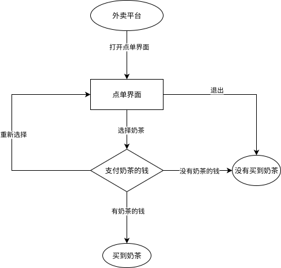
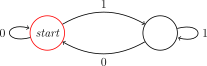
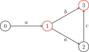
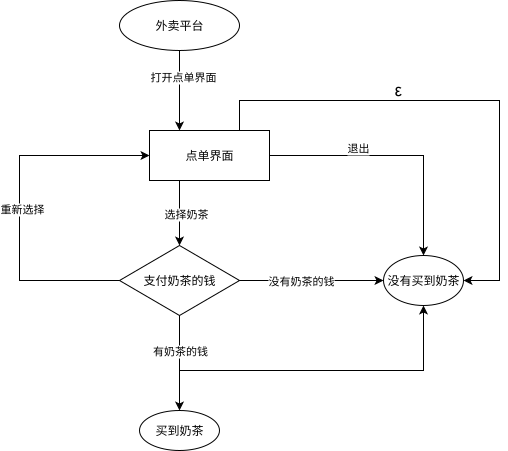

OI Wiki · prijevod · RaznoOI Wiki · translation · Miscellaneous
Konačni automatFinite state machine
Sadržaj
Preduvjeti: Jezici i problemi odlučivanja
Konačni automat (Finite State Machine, FSM; u nastavku kraće i samo automat) najjednostavnija je vrsta računskog modela, što se očituje u tome da su mu i izražajna moć i resursi iznimno ograničeni. Automati se široko primjenjuju u natjecateljskom programiranju i računarstvu, a njihova se ideja pojavljuje u mnogim algoritmima nad nizovima znakova, pa se preporučuje da prije učenja nekih algoritama nad nizovima znakova (KMP, AC automat, SAM) najprije savladate automate.
Uvod u automate
Najprije shvatimo čemu automati služe: automat je matematički model kojim se provjerava zadovoljava li neki niz signala određeni uzorak ili pravilo.
Neke pojmove iz te rečenice vrijedi pobliže objasniti. „Niz signala” označava niz signala poredanih po redu, npr. znakove niza znakova od prvoga do posljednjega, elemente polja od \(1\) do \(n\), znamenke broja od najviše do najniže itd. „Provjeriti zadovoljava li neko pravilo” može se shvatiti ovako: zanima nas pripada li taj niz nekom određenom skupu. Taj je skup definiran pravilima koja smo unaprijed zadali, npr. „svi binarni nizovi parne duljine” ili „svi palindromi”.
Ponekad trebamo odgovoriti na ovakva pitanja: ima li zadani niz neko svojstvo? Na primjer, je li binarni broj neparan, je li niz znakova palindrom, je li podniz nekog drugog niza znakova i slično. Automat je upravo matematički alat za rješavanje takvih problema.
Automat radi vrlo slično dijagramu toka. Zamislite da u aplikaciji za dostavu hrane želite naručiti mliječni čaj (milk tea); svi vaši izbori tvore jedan niz. Sljedeći dijagram toka jedan je primjer:

Ako je, na primjer, vaš niz izbora „otvori sučelje za narudžbu -> odaberi mliječni čaj -> imaš novca za mliječni čaj”, onda su stanja kroz koja redom prolazite možda „aplikacija za dostavu -> sučelje za narudžbu -> plaćanje mliječnog čaja -> mliječni čaj kupljen”. Tako je naš „automat za mliječni čaj” na temelju naših izbora odlučio jesmo li kupili mliječni čaj. Uočavamo još i da do nekog stanja može voditi više od jednog puta. Isto tako, ako niste kupili mliječni čaj, možda ste izravno izašli iz sučelja za narudžbu ili niste imali novca pa ga niste kupili.
Tim smo automatom nizove signala podijelili u dvije skupine: nizove signala u kojima je mliječni čaj kupljen i nizove u kojima nije. Ovisno o tome u kojem se stanju nalazimo na kraju, riješili smo jedan problem odlučivanja.
Iako smo rad automata upravo usporedili s dijagramom toka, dijagram toka sam je po sebi tek zoran alat za vizualizaciju i ne čini matematičku definiciju automata. Da bismo strukturu automata opisali preciznije, elemente dijagrama toka moramo apstrahirati. Nakon apstrakcije vidimo da se struktura dijagrama toka zapravo može pojednostaviti u usmjereni graf u kojem svaki vrh predstavlja jedno stanje, a svaki usmjereni brid prijelaz između stanja.
Stoga se temeljna struktura automata formalno može promatrati kao usmjereni graf koji nazivamo dijagramom stanja.
Automat radi slično dijagramu toka, s tim razlikama: svaki vrh automata vrh je odlučivanja; vrh automata samo je stanje, a ne zadatak; brid automata može prihvatiti više različitih znakova (nije ograničen na T ili F).
Na primjer, automat koji obavlja zadatak „provjeri je li binarni broj paran” izgleda ovako:

Krenuvši od početnog vrha, prihvaćamo binarni zapis broja od najviše znamenke prema najnižoj i gledamo gdje smo na kraju stali. Ako smo stali u vrhu s crvenim krugom, broj je paran; inače nije.
Ovdje valja naglasiti: u nastavku ćemo često spominjati pojmove poput „znak” i „abeceda (skup znakova)”, ali to ne znači da se automati primjenjuju samo na nizove znakova; znak ne mora biti slovo poput \(\tt abc\cdots z\), može biti i jedan izbor.
Ako treba odlučiti o odnosu konačnog niza signala i nekog drugog niza signala (npr. je li taj konačni niz signala podniz drugog niza signala), uobičajeno je za taj konačni niz signala izgraditi automat. O tome će biti riječi pri učenju KMP-a.
Treba imati na umu da je automat samo matematički model, a ne algoritam i ne struktura podataka. Isti se automat može implementirati na mnogo načina, s različitim vremenskim i prostornim složenostima.
Dalje možete nastaviti proučavati automate na ovoj stranici ili prijeći na konkretne primjere poput KMP-a, AC automata ili SAM-a.
FSM-ovi se dijele u dvije vrste: determinističke konačne automate i nedeterminističke konačne automate.
Deterministički konačni automat
Deterministički konačni automat (Deterministic Finite Automaton, DFA) odlikuje se time što mu je postupak odlučivanja determinističan. Na primjeru „automata za mliječni čaj”: čim otvorite sučelje za narudžbu, ulazite u sučelje za narudžbu; ne mogu se dogoditi nepredviđene situacije poput pada mreže zbog kojeg se sučelje ne otvara ili praznog mobitela s crnim zaslonom.
DFA
DFA je uređena petorka \((Q,\Sigma,\delta,q_0,F)\) koja sadrži:
- Konačan skup stanja \(Q\). Gledamo li DFA kao usmjereni graf, stanja DFA odgovaraju vrhovima grafa.
- Abecedu \(\Sigma\). Automat na ulazu može primati samo te znakove.
- Funkciju prijelaza \(\delta:Q\times \Sigma \to Q\), funkciju koja prima dva argumenta i vraća jednu vrijednost; prvi argument i povratna vrijednost su stanja, a drugi je argument znak iz abecede. Gledamo li DFA kao usmjereni graf, funkcija prijelaza DFA odgovara bridovima između vrhova, pri čemu je na svakom bridu jedan znak.
- Početno stanje \(q_0\in Q\), jedno posebno stanje. U raznim se tekstovima početno stanje obično označava sa \(s\), \(\textit{start}\) ili \(q_0\); u ovom tekstu koristimo \(q_0\).
- Skup prihvaćajućih stanja \(F\subseteq Q\), skup posebnih stanja.
DFA se jednostavno može prikazati sljedećom strukturom:
Referentna implementacija
// Deterministic Finite Automaton (DFA)
struct DFA {
int m; // Alphabet size.
int n; // Number of states.
int q0; // Initial state.
std::vector<std::vector<int>> trans; // Transitions: trans[c][q].
std::vector<int> acc; // Acceptance labels per state:
// - 0 = non-accepting
DFA(int m, int n = 0, int q0 = 0)
: m(m), n(n), q0(q0), trans(m, std::vector<int>(n)), acc(n) {}
// Returns minimized DFA via Hopcroft's algorithm.
DFA hopcroft_minimize() const;
};
Postupak određivanja niza stanja kroz koja ulazni niz \(w\) prolazi u DFA i provjere je li prihvaćen naziva se izračun (computation).
Tijek izračuna DFA
Neka je \(M=(Q,\Sigma,\delta,q_0,F)\) DFA, a \(w=w_1w_2\cdots w_n\in\Sigma^*\) niz. Ako postoji niz stanja \(r_0,r_1,\cdots,r_n\) iz \(Q\) takav da
- \(r_0=q_0\),
- \(\delta(r_i,w_{i+1})=r_{i+1}\) vrijedi za svaki \(i=0,1,\cdots,n-1\),
- \(r_n\in F\),
kažemo da \(M\) prihvaća (accepts) \(w\). U suprotnom kažemo da \(M\) ne prihvaća \(w\).
Kad DFA čita niz znakova, od početnog stanja prelazi znak po znak prema funkciji prijelaza. Ako se nakon čitanja svih znakova niza nalazi u prihvaćajućem stanju, kažemo da DFA prihvaća taj niz; u suprotnom kažemo da ga DFA ne prihvaća.
Formalni jezik
Formalni jezik (language) nad abecedom \(\Sigma\), ili kraće jezik, skup je \(L\) nizova nad \(\Sigma\).
Jezik koji automat prepoznaje
Za automat \(M\) jezik \(L(M)\) koji on prepoznaje definira se kao skup svih nizova koje prihvaća, \(\{w\mid M\text{ accepts }w\}\).
Ne može se svaki jezik prepoznati DFA-om.
Regularni jezik
Ako neki jezik može prepoznati neki DFA, nazivamo ga regularnim jezikom (regular language), a kaže se i pravilni jezik.
Već smo spomenuli da se automat može prikazati dijagramom stanja. Evo DFA koji prihvaća nizove \(\tt a\), \(\tt ab\) i \(\tt aac\) i nijedan drugi:

(Na slici je izostavljeno stanje neuspjeha; svi neprikazani prijelazi vode u to stanje neuspjeha.)
Nedeterministički konačni automat
Nedeterministički konačni automat1 (Nondeterministic Finite Automaton, NFA) prirodno je poopćenje DFA. U NFA za svako stanje i svaki znak može postojati nula, jedno ili više sljedećih stanja. Usto NFA o kojem govorimo u ovom odjeljku dopušta prihvaćanje praznog znaka, tj. iz nekog stanja može prijeći u neko od svojih sljedećih stanja ne potrošivši nijedan znak.
Uzmimo opet primjer „automata za mliječni čaj”. Nakon narudžbe, iako imate novca za mliječni čaj, zbog loše mreže možda ga ipak ne kupite – to je postojanje više sljedećih stanja; moguće je i da zbog prespore ruke, iako je ulazni niz (tj. niz radnji) jednak, mliječni čaj ne kupite jer je rasprodan – to je postojanje praznog znaka: praznim se znakom može, ali i ne mora prijeći. Gornje se ponašanje postiže malom izmjenom prethodnog automata:

Očito je svaki DFA ujedno i NFA, pa NFA može prepoznati barem sve regularne jezike. No može li NFA kao proširenje DFA prepoznati više jezika? Zapravo ne; ekvivalentnost DFA i NFA razmotrit ćemo poslije.
NFA
Neka \(\mathcal{P}(Q)\) označava partitivni skup skupa \(Q\). Neka \(\varepsilon\notin\Sigma\) označava prazni niz i neka je \(\Sigma_\varepsilon = \Sigma\cup\{\varepsilon\}\). NFA je uređena petorka \((Q,\Sigma,\delta,q_0,F)\) koja sadrži:
- Konačan skup stanja \(Q\),
- Abecedu \(\Sigma\),
- Funkciju prijelaza \(\delta:Q\times \Sigma_{\varepsilon} \to \mathcal{P}(Q)\), funkciju koja prima dva argumenta i vraća skup stanja; prvi je argument stanje, drugi je argument znak iz abecede ili prazni niz \(\varepsilon\), a povratna je vrijednost skup svih mogućih sljedećih stanja (može biti prazan),
- Početno stanje \(q_0\in Q\),
- Skup prihvaćajućih stanja \(F\subseteq Q\).
Izračun NFA odgovara istodobnom pokretanju više DFA. U svakom se koraku iscrpno isprobavaju sve mogućnosti, i na kraju, čim barem jedna grana stigne u prihvaćajuće stanje, NFA prihvaća cijeli niz.
Tijek izračuna NFA
Neka je \(N=(Q,\Sigma,\delta,q_0,F)\) NFA. Ako se niz \(w\) može zapisati kao neki \(y_1y_2\cdots y_m\) (gdje je \(y_i\in\Sigma_\varepsilon\)) i postoji niz stanja \(r_0,r_1,\cdots,r_m\) iz \(Q\) takav da
- \(r_0=q_0\),
- \(r_{i+1}\in\delta(r_i,y_{i+1})\) vrijedi za svaki \(i=0,1,\cdots,m-1\),
- \(r_m\in F\),
kažemo da \(N\) prihvaća \(w\). U suprotnom kažemo da \(N\) ne prihvaća \(w\).
Budući da su prazni znakovi dopušteni, pri zapisu niza \(w\) kao \(y_1y_2\cdots y_m\in\Sigma^*_\varepsilon\) može se umetnuti proizvoljno mnogo praznih znakova. Na primjer, niz \(\texttt{abc}\) može se zapisati kao \(\texttt{a}\varepsilon\texttt{bc}\varepsilon\varepsilon\in\Sigma^*_\varepsilon\). Za razliku od DFA, kod kojeg svaki ulaz daje samo jedan ishod, kod NFA svaki ulaz može dati više ishoda koji čine skup ishoda.
Ekvivalentnost DFA i NFA
Za dva automata kažemo da su ekvivalentni ako i samo ako prepoznaju isti jezik. DFA i NFA su ekvivalentni, tj. svaki je NFA ekvivalentan nekom DFA; stoga je i klasa jezika koje prepoznaju NFA upravo klasa svih regularnih jezika. Svaki se DFA izravno može promatrati kao NFA; obrnuto, NFA se u DFA može pretvoriti konstrukcijom partitivnog skupa (powerset construction).
Konstrukcija partitivnog skupa
Neka je NFA \(N = (Q, \Sigma, \delta, q_0, F)\). Definirajmo \(E(q)\) kao skup stanja dostižnih iz stanja \(q\) samo \(\varepsilon\)-prijelazima (uključujući i samo \(q\)), tj. \(\varepsilon\)-zatvorenje stanja \(q\).
Konstruiramo DFA \(M = (Q', \Sigma, \delta', E(q_0), F')\), gdje je:
- konačan skup stanja \(Q' = \mathcal{P}(Q)\),
- funkcija prijelaza \(\delta' : Q' \times \Sigma \to Q'\) takva da je \(\delta'(S, c) = \bigcup_{q \in S,~q' \in \delta(q, c)} E(q')\),
- skup prihvaćajućih stanja \(F' = \{ S \subseteq Q \mid S \cap F \neq \varnothing \}\).
Očito u svakom koraku izračuna stanje u kojem se nalazi \(M\) odgovara skupu stanja u kojima se može nalaziti \(N\).
Iako NFA i DFA imaju jednaku moć prepoznavanja jezika, NFA su i dalje korisni. Razlog je to što za neke regularne jezike NFA treba daleko manje stanja nego DFA. Na primjer, može se konstruirati NFA s \(n\) stanja čiji odgovarajući minimalni DFA ima \(\Theta(2^n)\) stanja. Tada je vremenski povoljnije izravno izvoditi izračun na NFA.
Vremenska složenost izračuna DFA i NFA
Neka je duljina zadanog niza \(n\), broj stanja automata \(s\), a veličina abecede konstanta. Tada je očito vremenska složenost izračuna DFA \(O(n)\): dovoljno je simulirati gore opisani postupak.
Naivni izračun NFA ima vremensku složenost \(O(ns^2)\), jer treba razmotriti svako moguće sljedeće stanje te složenost spajanja stanja. Dakako, pomoću bitseta ili metode četiriju Rusa (Method of Four Russians) složenost izračuna može se poboljšati na \(O\left(\dfrac{ns^2}{w}\right)\) odnosno \(O\left(\dfrac{ns^2}{w\cdot \log n}\right)\).
Regularni izrazi i regularni jezici
U ovom odjeljku razmatramo definiciju i svojstva regularnih izraza i regularnih jezika te proučavamo odnos regularnih izraza i FSM-ova.
Regularni izrazi
Regularni izraz (regular expression) još je jedan uobičajen način opisivanja regularnih jezika. Iako taj naziv susrećemo u mnogim suvremenim programskim jezicima (npr. Pythonu), ti jezici zapravo implementiraju nadskup regularnih izraza.
Regularni izraz
Za zadanu abecedu \(\Sigma\) regularni izraz je niz simbola induktivno definiran sljedećim pravilima:
- svaki znak \(c \in \Sigma\) regularni je izraz;
- simbol praznog niza \(\varepsilon\) regularni je izraz;
- simbol praznog jezika \(\varnothing\) regularni je izraz;
- ako su \(R_1\) i \(R_2\) regularni izrazi, onda su i \((R_1 + R_2)\), \((R_1 R_2)\) (zapisuje se i \((R_1 \cdot R_2)\)) te \((R_1^\ast)\) regularni izrazi.
Svrha je regularnog izraza tim simbolima opisati neki jezik. Svakom regularnom izrazu odgovara jedan formalni jezik.
Jezik koji regularni izraz predstavlja
Neka je \(L(R)\) formalni jezik koji odgovara regularnom izrazu \(R\). Tada vrijedi:
- ako je \(R = c\), gdje je \(c \in \Sigma\), onda je \(L(R) = \{c\}\);
- ako je \(R = \varepsilon\), onda je \(L(R) = \{\varepsilon\}\);
- ako je \(R = \varnothing\), onda je \(L(R) = \varnothing\);
- ako je \(R = (R_1 + R_2)\), onda je \(L(R) = L(R_1) \cup L(R_2)\);
- ako je \(R = (R_1 R_2) = (R_1\cdot R_2)\), onda je \(L(R) = \{ uv \mid u \in L(R_1),~ v \in L(R_2) \}\), gdje \(uv\) označava nadovezivanje dvaju nizova jednog na drugi;
- ako je \(R = (R_1^\ast)\), onda je \(L(R) = \{u_1 u_2 \cdots u_n \mid u_i \in L(R_1),\ n \in \mathbf{N}_+\}\cup\{\varepsilon\}\), što se naziva i Kleeneova zvjezdica (Kleene star) ili Kleeneovo zatvorenje (Kleene closure), kraće zatvorenje.
Naravno, kad se dogovori prioritet operacija, zagrade se mogu izostaviti kad god to ne izaziva zabunu.
Primjer
Neka je \(L(R_1) = \{0,\ 01\}\) i \(L(R_2) = \{\varepsilon,\ 1,\ 11,\ 111,\ \dots\}\). Tada je:
- \(L(R_1R_2) = \{0,\ 01,\ 011,\ 0111,\ \dots\}\),
- \(L(R_2^\ast) = L(R_2)\),
- \(L(R_1 + R_2) = \{0,\ 01,\ \varepsilon,\ 1,\ 11,\ 111,\ \dots\}\).
Svaki se regularni izraz Thompsonovom konstrukcijom (Thompson's construction) može pretvoriti u NFA, a svaki se DFA metodom eliminacije stanja2 (State Elimination Method) može pretvoriti u regularni izraz. Stoga su regularni izrazi i FSM-ovi ekvivalentni.
Regularni jezici
U ovom pododjeljku ne razmatramo konkretne regularne izraze, nego regularne izraze s varijablama kao parametrima (varijabla može biti bilo koji regularni jezik). Primjena algebarskih zakona regularnih izraza pomaže pri njihovu pojednostavljivanju.
Algebarska svojstva regularnih jezika
- Komutativnost unije: \(L + M = M + L\)
- Asocijativnost unije: \((L + M) + N = L + (M + N)\)
- Asocijativnost nadovezivanja: \((LM)N = L(MN)\)
- \(\varnothing\) je neutralni element unije: \(\varnothing + L = L + \varnothing = L\)
- \(\varepsilon\) je neutralni element nadovezivanja: \(\varepsilon L = L \varepsilon = L\)
- \(\varnothing\) je nul-element nadovezivanja: \(\varnothing L = L \varnothing = \varnothing\)
- Distributivnost: \(L(M + N) = LM + LN\), \((M + N)L = ML + NL\)
- Idempotentnost unije: \(L + L = L\)
- Zakoni o zatvorenju: \((L^\ast)^\ast = L^\ast\), \(\varnothing^\ast = \varepsilon\), \(\varepsilon^\ast = \varepsilon\)
Važno je svojstvo regularnih jezika i njihova zatvorenost. Ta nam svojstva omogućuju da, polazeći od nekoliko jednostavnih automata, određenim operacijama konstruiramo konačne automate (FSM) koji prepoznaju druge jezike. Ukratko, zatvorenost je alat za konstrukciju složenih FSM-ova.
O zatvorenosti regularnih jezika vrijedi:
Zatvorenost regularnih jezika
Neka su \(L,M\) dva regularna jezika nad abecedom \(\Sigma\) i neka je \(h:\Sigma\to\Sigma^*\) preslikavanje. Homomorfizam niza \(s=s_1s_2\cdots s_n\) definiramo kao \(h(s)=h(s_1)h(s_2)\cdots h(s_n)\). Tada:
- unija \(L + M\) dvaju regularnih jezika je regularna,
- nadovezivanje \(LM\) dvaju regularnih jezika je regularno,
- zatvorenje \(L^*\) regularnog jezika je regularno,
- komplement \(\Sigma^*\setminus L\) regularnog jezika je regularan,
- presjek \(L\cap M\) dvaju regularnih jezika je regularan,
- razlika \(L\setminus M\) dvaju regularnih jezika je regularna,
- obrat \(L^R=\{s_n\cdots s_2s_1 \mid s=s_1s_2\cdots s_n\in L\}\) regularnog jezika je regularan,
- homomorfna slika \(h(L)=\{h(s)\mid s\in L\}\) regularnog jezika je regularna,
- inverzna homomorfna slika \(h^{-1}(L) = \{ s \in \Sigma^\ast \mid h(s) \in L \}\) regularnog jezika je regularna.
Jednostavna je posljedica da su svi konačni jezici regularni. Zapravo, trie upravo je automat koji ih prepoznaje.
Myhill–Nerodeov teorem
Myhill–Nerodeov teorem daje kriterij za odlučivanje je li jezik regularan. Teorem pojmom klasa ekvivalencije opisuje strukturna obilježja regularnih jezika.
Nerodeova relacija ekvivalencije
Za jezik \(L\) i proizvoljne nizove \(x,y\in \Sigma^\ast\), ako za svaki \(z\in\Sigma^*\) vrijedi \(xz\in L\iff yz\in L\), kažemo da su nizovi \(x\) i \(y\) ekvivalentni s obzirom na \(L\) i pišemo \(x\equiv_L y\).
Drugim riječima, ako za dva niza \(x\) i \(y\) vrijedi da nadovezivanjem istog proizvoljnog niza \(z\) (uključujući prazni niz) na \(x\) i na \(y\) dobiveni nizovi uvijek ili oba pripadaju \(L\) ili oba ne pripadaju \(L\), kažemo da su \(x\) i \(y\) ekvivalentni s obzirom na \(L\).
Prema toj definiciji skup svih konačnih nizova dijelimo u jednu ili više klasa ekvivalencije. Ako i samo ako je tih klasa ekvivalencije konačno mnogo, od njih se može konstruirati DFA koji prepoznaje taj jezik. Broj stanja tog DFA jednak je broju klasa ekvivalencije. Štoviše, taj je broj stanja najmanji među svim DFA koji prepoznaju taj jezik. To je Myhill–Nerodeov teorem.
Myhill–Nerodeov teorem
Jezik \(L\) je regularan ako i samo ako je broj klasa ekvivalencije na koje relacija ekvivalencije \(\equiv_L\) dijeli \(\Sigma^\ast\) konačan.
Za svaki DFA koji prepoznaje jezik \(L\), bilo koja dva niza \(x\) i \(y\) koja ga dovode u isto stanje nužno pripadaju istoj klasi ekvivalencije.
Nadalje, broj klasa ekvivalencije jednak je broju stanja minimalnog DFA koji prepoznaje \(L\). Svaka klasa ekvivalencije odgovara točno jednom stanju minimalnog DFA. Taj je minimalni DFA jedinstven do na izomorfizam.
Teorem daje način da se DFA konstruira pomoću relacije ekvivalencije:
- Skup stanja čine sve klase ekvivalencije dobivene podjelom prema relaciji ekvivalencije. U svakoj klasi ekvivalencije proizvoljno odaberemo predstavnika (npr. neki niz najmanje duljine).
- Za konstrukciju funkcije prijelaza dovoljno je na odabranog predstavnika nadovezati znak prijelaza i pronaći stanje koje odgovara klasi ekvivalencije dobivenog niza; to je sljedeće stanje tog prijelaza. Budući da su svi nizovi unutar iste klase ekvivalencije ekvivalentni, izbor predstavnika ne utječe na ishod prijelaza.
- Početno stanje je klasa ekvivalencije koja odgovara praznom nizu \(\varepsilon\).
- Skup prihvaćajućih stanja skup je onih klasa ekvivalencije čiji predstavnik pripada zadanom jeziku.
Klasičan je primjer sufiksni automat, koji je upravo minimalni DFA konstruiran pomoću Myhill–Nerodeova teorema.
Myhill–Nerodeov teorem obično se primjenjuje za konstrukciju DFA koji odgovaraju nekim beskonačnim regularnim jezicima. Vrlo su često uvjeti zadatka razmjerno jednostavni, pa je za konstrukciju automata koji prepoznaje cijeli jezik dovoljno razmotriti skup nizova ne prevelike duljine.
Primjer zadatka
U ovom odjeljku na jednom primjeru pokazujemo kako se Myhill–Nerodeov teorem primjenjuje u praksi.
P12294 [THUPC 2025 决赛] 一个 01 串，n 次三目运算符，最后值为 1（加强版） (P12294, THUPC 2025 finale: Jedan 01-niz, n ternarnih operatora, konačna vrijednost 1, pojačana verzija)
Tablica ternarne operacije nad \(a,b,c\) je \(s_0s_1\cdots s_7\) (\(s\) se sastoji samo od \(0\) i \(1\)) i znači: ako je bit \(s\) na mjestu \(a+2b+4c\) jednak \(1\), rezultat je \(1\), inače je \(0\).
Zadana je tablica operacije \(s\) i \(q\) nizova od \(0\) i \(1\) duljine \(2n+1\); za svaki niz treba zasebno odgovoriti:
može li se \(n\) puta izvesti operacija koja tri uzastopne znamenke zamjenjuje pripadnom vrijednošću iz tablice tako da je rezultat \(1\); ako može, ispisati postupak, inače utvrditi da rješenja nema.
\(1\le 2n+1\le 10^5,~\sum(2n+1)\le 3\times 10^5\).
Rješenje
Skup \(01\)-nizova iz kojih se može dobiti \(1\) regularan je jezik (tj. postoji DFA koji odlučuje može li se iz \(01\)-niza dobiti \(1\))6. Stoga primjenjujemo Myhill–Nerodeov teorem. Budući da su uvjeti razmjerno jednostavni, eksperimentom se pokazuje da je dovoljno na klase ekvivalencije podijeliti \(01\)-nizove duljine \(\le 9\); pri provjeri jesu li dva niza ekvivalentna dovoljno je isprobati nastavke duljine \(\le 6\). Ako za dva niza vrijedi da se nadovezivanjem proizvoljnog nastavka duljine \(\le 6\) iz oba istodobno može dobiti željeni niz ili ni iz jednog ne može, ta su dva niza ekvivalentna.
Svaki prijelaz odgovara dodavanju novog znaka \(0\) ili \(1\) na kraj trenutačnog niza, nakon čega se novi niz zamjenjuje najkraćim nizom iz njegove klase ekvivalencije. Prema tim prijelazima gradimo automat. Taj automat u složenosti \(O(n)\) odlučuje postoji li za niz duljine \(n\) redoslijed operacija koji daje rezultat \(1\). Pritom je broj stanja automata vrlo malen.
Radi praktičnosti gradimo \(6\) automata, koji redom odlučuju može li se nekim redoslijedom operacija dobiti rezultat \(0,1,00,01,10,11\). Za sve moguće tablice operacije najveći broj stanja automata iznosi \(47\).
Pomoću automata i odgovarajuće pretprocesiranja statički upit nad intervalom (postoji li u intervalu redoslijed operacija koji daje rezultat \(1\)) može se ostvariti sparse tableom ili cat treeom: prvi odgovara na upit u \(O(\log n)\), a drugi u \(O(1)\).
Konstrukciju rješavamo metodom podijeli pa vladaj. Neka \(f(l,r,t)\) označava postupak kojim se interval \([l,r]\) spaja u \(t\in\{0,1,00,01,10,11\}\). Koristimo heurističko cijepanje: održavamo dva pokazivača \(i,j\), jedan ide slijeva nadesno, a drugi zdesna nalijevo, i tako isprobavamo točku prekida \(\textit{mid}\) jednaku \(i\) ili \(j\). Za \(t\in\{0,1\}\) isprobavamo kako se \(t\) dijeli na lijevi i desni dio, pri čemu je u jednom dijelu \(t\) duljine \(2\), a u drugom duljine \(1\). (Na primjer, za tablicu medijana \(s=00010111\), \(1\) se može podijeliti na \(01\) i \(1\).) Za \(t\in\{00,01,10,11\}\) \(t\) se izravno dijeli na lijevi i desni dio.
Ako su tako dobiveni lijevi i desni dio redom \(t_1\) i \(t_2\), dalje provjeravamo može li \([l,\textit{mid}]\) dati \(t_1\) i može li \([\textit{mid}+1,r]\) dati \(t_2\); ako može, izravno nastavljamo rekurzivno. Ako se za provjeru koristi cat tree u \(O(1)\), složenost konstrukcije heurističkim cijepanjem iznosi \(O(n\log n)\); koristi li se za provjeru sparse table, složenost konstrukcije je \(O(n\log^2n)\).
S cat treeom ukupna je složenost \(O(n|Q|\log n+n\log n)\), gdje je \(|Q|\le 47\). Referentni kôd radi jednostavnosti koristi sparse table, a konstantu smanjuje blokovskom podjelom na najnižoj razini; pripadna ukupna složenost je \(O(n|Q|\log n+n\log^2 n)\).
Referentni kod
#include <array>
#include <iostream>
#include <unordered_map>
#include <vector>
constexpr int L = 3;
std::array<int, 1 << L> op;
constexpr int X = (1 << L) - 2;
// Build a DFA that accepts binary strings which evaluate to a given string.
// 0b000 → "00"
// 0b001 → "01"
// 0b010 → "10"
// 0b011 → "11"
// 0b100 → "0"
// 0b101 → "1"
DFA build(int x) {
constexpr int L1 = 9, L2 = 6;
// The result for string `st` of length `len` is stored at (1 << len) | st.
const auto idx = [](int len, int st) -> int { return (1 << len) | st; };
// Compute which bit strings are accepted using dynamic programming.
std::vector<bool> acc(1 << (L1 + L2 + 1));
acc[(x >> 2) ? idx(1, x & 1) : idx(2, x)] = true;
for (int len = (x >> 2) ? 3 : 4; len <= L1 + L2; len += 2) {
for (int st = 0; st < (1 << len); ++st) {
for (int i = 0; i + L <= len; ++i) {
// Replace st[i..i+2] using the op[] rule, and check if the result is
// accepted. Result = st[0..i-1] + op[st[i..i+2]] + st[i+3..end]
int pr =
((((st >> (i + L)) << 1) | op[(st >> i) & ((1 << L) - 1)]) << i) |
(st & ((1 << i) - 1));
if (acc[idx(len - 2, pr)]) {
acc[idx(len, st)] = true;
break;
}
}
}
}
// Construct a DFA using the Myhill-Nerode theorem.
DFA dfa(2);
std::unordered_map<std::vector<bool>, int>
mp; // Maps characteristic vectors to state IDs.
std::vector<int> sts; // Representative 01 strings for each state.
std::vector<int> ids(1 << (L1 + 1)); // Maps 01 strings to DFA state IDs.
for (int len = 0; len <= L1; ++len) {
for (int st = (1 << len); st < (2 << len); ++st) {
// Construct characteristic vector for this prefix.
std::vector<bool> key(1 << (L2 + 1));
for (int nxt = 0; nxt <= L2; ++nxt)
std::copy(acc.begin() + (st << nxt), acc.begin() + ((st + 1) << nxt),
key.begin() + (1 << nxt));
if (!mp.count(key)) {
mp[key] = dfa.n++;
sts.push_back(st);
dfa.acc.push_back(key[idx(0, 0)]);
}
ids[st] = mp[key];
}
}
// Build transitions.
for (int c = 0; c < 2; ++c) {
dfa.trans[c].resize(dfa.n);
for (int i = 0; i < dfa.n; ++i) dfa.trans[c][i] = ids[(sts[i] << 1) | c];
}
return dfa;
}
std::vector<DFA> dfa;
// Initialize the DFA's.
void init() {
std::string s;
std::cin >> s;
for (int i = 0; i < (1 << L); ++i) op[i] = s[i] - '0';
std::swap(op[1], op[4]);
std::swap(op[3], op[6]);
for (int x = 0; x < X; ++x) dfa.push_back(build(x));
}
std::string s;
constexpr int B = 5; // Block size is 2^B.
std::vector<std::vector<std::array<std::vector<int>, X>>> pre;
void precompute() {
int n = s.size();
for (int i = 0; i < n; ++i) s[i] -= '0';
int nn = ((n - 1) >> B) + 1;
pre.clear();
// Compute transitions over single blocks (2^B characters) for each DFA.
pre.emplace_back(nn);
for (int i = 0; i < nn; ++i) {
for (int x = 0; x < X; ++x) {
pre[0][i][x].resize(dfa[x].n);
for (int j = 0; j < dfa[x].n; ++j) {
int cr = j;
for (int ii = (i << B); ii < ((i + 1) << B) && ii < n; ++ii)
cr = dfa[x].trans[s[ii]][cr];
pre[0][i][x][j] = cr;
}
}
}
// Build higher-level transitions using binary lifting.
for (int d = 1; (1 << d) <= nn; ++d) {
pre.emplace_back(nn - (1 << d) + 1);
for (int i = 0; i <= nn - (1 << d); ++i) {
for (int x = 0; x < X; ++x) {
pre[d][i][x].resize(dfa[x].n);
for (int j = 0; j < dfa[x].n; ++j)
pre[d][i][x][j] =
pre[d - 1][i + (1 << (d - 1))][x][pre[d - 1][i][x][j]];
}
}
}
}
// Check if the x-th DFA accepts s[l...r].
bool check(int l, int r, int x) {
if (l > r) return false;
int cr = dfa[x].q0;
if ((l >> B) == (r >> B)) {
for (; l <= r; ++l) cr = dfa[x].trans[s[l]][cr];
} else {
for (; (l & ((1 << B) - 1)) && (l <= r); ++l) cr = dfa[x].trans[s[l]][cr];
int d = (r >> B) - (l >> B);
for (int z = 0; z < (int)pre.size(); ++z)
if ((d >> z) & 1) {
cr = pre[z][l >> B][x][cr];
l += 1 << (z + B);
}
for (; l <= r; ++l) cr = dfa[x].trans[s[l]][cr];
}
return dfa[x].acc[cr];
}
// Construct expression for s[l...r].
void calc(int l, int r, int x) {
if (l == r) return (void)(std::cout << (x & 1));
if (x >> 2) {
for (int i = l, j = r; i <= j; i += 2, j -= 2) {
for (int k = 0; k < (1 << L); ++k) {
if (op[k] != (x & 1)) continue;
if (check(l, i, (k >> 2) | 4) && check(i + 1, r, k & 3)) {
std::cout << '(';
calc(l, i, (k >> 2) | 4);
calc(i + 1, r, k & 3);
std::cout << ')';
return;
}
if (check(l, j - 1, k >> 1) && check(j, r, (k & 1) | 4)) {
std::cout << '(';
calc(l, j - 1, k >> 1);
calc(j, r, (k & 1) | 4);
std::cout << ')';
return;
}
}
}
} else {
for (int i = l, j = r; i <= j; i += 2, j -= 2) {
if (check(l, i, (x >> 1) | 4) && (check(i + 1, r, (x & 1) | 4))) {
calc(l, i, (x >> 1) | 4);
calc(i + 1, r, (x & 1) | 4);
return;
}
if (check(l, j - 1, (x >> 1) | 4) && check(j, r, (x & 1) | 4)) {
calc(l, j - 1, (x >> 1) | 4);
calc(j, r, (x & 1) | 4);
return;
}
}
}
}
void solve() {
std::cin >> s;
int n = s.size();
precompute();
if (!check(0, n - 1, 0b101)) {
std::cout << -1 << '\n';
return;
}
calc(0, n - 1, 0b101);
std::cout << '\n';
}
int main() {
init();
int q;
std::cin >> q;
for (; q; --q) {
solve();
}
return 0;
}
Zadaci za vježbu
- Median Replace Hard
- JOISC 2024 卡牌收集 (Card Collection) (izgradnjom automata pomoću Myhill–Nerodeova teorema u ovom se zadatku može odgovarati na više upita nad intervalima)
Minimizacija DFA
Ranije smo spomenuli da su dva DFA ekvivalentna ako i samo ako prepoznaju isti regularni jezik. Prema prepoznatom jeziku svi se DFA dijele u beskonačno mnogo klasa ekvivalencije. Pri algoritmima poput DP-a unutar DP-a izgrađeni DFA može imati prevelik \(|Q|\), zbog čega je složenost prijelaza vanjskog DP-a prevelika. Zato često treba pronaći minimalni DFA u klasi ekvivalencije kojoj dani DFA pripada, kako bi se smanjila složenost prijelaza vanjskog DP-a.
Myhill–Nerodeov teorem iz prethodnog odjeljka daje jedan način konstrukcije. No za neke složenije probleme izravna konstrukcija Myhill–Nerodeovim teoremom zahtijeva obilazak skupa prilično dugih nizova i troši mnogo vremena. Stoga trebamo metodu kojom se, polazeći od već konstruiranog DFA (što je obično lako), izravno konstruira minimalni DFA. To se naziva problemom minimizacije DFA (DFA minimization).
Uobičajeni algoritam za minimizaciju DFA jest Hopcroftov algoritam. Myhill–Nerodeov teorem kaže da su za svaki DFA koji prepoznaje neki jezik nizovi koji ga dovode u isto stanje nužno Nerode-ekvivalentni. Svi Nerode-ekvivalentni nizovi odgovaraju istom stanju minimalnog DFA, pa je stanje minimalnog DFA nužno skup nekoliko stanja postojećeg DFA (ovdje pretpostavljamo da su sva stanja postojećeg DFA dostižna iz \(q_0\); inače najprije treba ukloniti nedostižna stanja). Možemo krenuti od skupa stanja postojećeg DFA i podijeliti ga u nekoliko klasa ekvivalencije ne razmatrajući konkretne nizove. Hopcroftov algoritam kreće od najgrublje podjele \(\{F,Q\setminus F\}\) i nizom svjedoka \(A\) profinjuje tu podjelu dok se više ne može profiniti. To je temeljna ideja Hopcroftova algoritma.
Svjedok \(A\) je skup stanja takav da on i njegov komplement \(Q\setminus A\) sigurno odgovaraju različitim Nerodeovim klasama ekvivalencije. Drugim riječima, za svaki \(u\in A\) i \(v\in Q\setminus A\) postoji niz \(s\in\Sigma^*\) takav da se nakon čitanja niza \(s\) iz \(u\) odnosno iz \(v\) točno jedan od njih nalazi u prihvaćajućem stanju. Stoga, ako dva stanja \(u,v\in Q\) pod nekim znakom \(c\) prelaze točno jedno u svjedoka \(A\), a drugo izvan svjedoka \(A\), tj. od \(\delta(u,c)\in A\) i \(\delta(v,c)\in A\) vrijedi točno jedno, onda \(u,v\) također nisu ekvivalentna – nakon čitanja niza \(cs\) iz \(u\) odnosno iz \(v\) točno je jedan od njih u prihvaćajućem stanju. Stoga se podjela može profiniti prema tome vrijedi li \(\delta(u,c)\in A\). Konkretno, neka je
Ako ni \(S_x\) ni \(P_x\setminus S_x\) nisu prazni, skup stanja \(P_x\) u trenutačnoj podjeli može se profiniti u \(S_x\) i \(P_x\setminus S_x\).
Na početku skup prihvaćajućih stanja \(F\) kao svjedoka stavljamo u skup svjedoka \(W\), tj. \(W\gets\{F\}\), a trenutačnu podjelu održavamo kao \(P\gets\{F,~Q\setminus F\}\). Početni je svjedok očito valjan: stanja iz \(F\) i \(Q\setminus F\) nikako ne mogu biti ekvivalentna. Svaki put iz skupa svjedoka \(W\) proizvoljno uzimamo jedan skup \(A\) kojim profinjujemo trenutačnu podjelu. Prolazimo kroz sve znakove \(c\in\Sigma\). Za svaki skup stanja \(P_x\) u trenutačnoj podjeli \(P\) izračunamo gore opisani \(S_x\). Ako je \(S_x\neq\varnothing\) i \(|S_x|\neq|P_x|\), znači da se \(P_x\) može dalje podijeliti u dva skupa \(S_x\) i \(P_x\setminus S_x\), kojima izravno zamjenjujemo \(P_x\) u \(P\).
Svaki put kad dobijemo finiju podjelu, dobili smo i nove svjedoke. U načelu bi se i novodobiveni \(S_x\) i \(P_x\setminus S_x\) mogli staviti u skup svjedoka \(W\) i pričekati daljnju provjeru. No to nije nužno. Lako je uvidjeti da je za tri svjedoka \(P_x,S_x,P_x\setminus S_x\) dovoljno provjeriti bilo koja dva da bi se zajamčila točnost rezultata: ishodi su samo \(\delta(u,c)\in S_x\), \(\delta(u,c)\in P_x\setminus S_x\) i \(\delta(u,c)\notin P_x\), a za podjelu skupa na tri dijela dovoljne su dvije provjere. Stoga, kad \(P_x\) dijelimo na \(S_x\) i \(P_x\setminus S_x\): ako se \(P_x\) još nalazi u skupu svjedoka \(W\), to znači da svjedok \(P_x\) još nije provjeren, pa \(P_x\) u skupu svjedoka \(W\) zamjenjujemo dvama skupovima \(S_x\) i \(P_x\setminus S_x\); inače je trenutačna podjela sigurno jednakovrijedna3 rezultatu provjere svjedoka \(P_x\), pa je dovoljno u skup svjedoka \(W\) staviti manji od \(S_x\) i \(P_x\setminus S_x\). Slično heurističkom cijepanju, time se postiže dobra složenost.
Zapisan kao pseudokod, gornji postupak glasi:
Pri implementaciji algoritma usko je grlo složenosti računanje skupa \(S\). Izravan prolazak kroz sva stanja \(q\in Q\) s provjerom vrijedi li \(\delta(q,c)\in A\) nije prihvatljiv. Stoga prije pokretanja algoritma treba pretprocesirati obrnute prijelaze \(\{q\in Q\mid \delta(q,c)=a\}\), pa se pomoću njih prolaskom kroz \(a\in A\) dobiva skup \(S\). Time se osigurava da se svaki prijelaz \(\delta(q,c)=a\) obilazi samo kad \(a\) pripada nekom svjedoku; a gore opisani način odabira svjedoka jamči da je u nizu svjedoka \(A_1\supset A_2\supset\cdots\supset A_k\) koji sadrže \(a\) i stvarno se koriste u algoritmu svaki prethodni barem dvostruko veći od sljedećeg, pa je \(k\in O(\log |Q|)\). Drugim riječima, svaki se prijelaz obilazi najviše \(O(\log |Q|)\) puta, a ukupan je broj prijelaza \(|Q||\Sigma|\), pa je ukupna složenost \(O(|Q||\Sigma|\log |Q|)\).
Referentna implementacija:4
Referentna implementacija
// DFA minimization via Hopcroft's algorithm.
// Complexity: O(n * m * log(n)).
DFA DFA::hopcroft_minimize() const {
// Construct inverse transition maps:
// - pre[c] stores states sorted by the target of transition c.
// - pos[c][s] is the start index in pre[c] of transitions going to state s.
std::vector<std::vector<int>> pre(m), pos(m);
for (int c = 0; c < m; ++c) {
pre[c].assign(n, 0);
pos[c].assign(n + 1, 0);
// Counting sort.
for (int i = 0; i < n; ++i) ++pos[c][trans[c][i]];
for (int i = 0; i < n; ++i) pos[c][i + 1] += pos[c][i];
for (int i = 0; i < n; ++i) pre[c][--pos[c][trans[c][i]]] = i;
}
// Partition element structure:
// - os: starting index in the state list.
// - sz: number of states in this class.
// - cnt: temporary count of marked states during refinement.
// - mv: temporary count of marked states moved to the front.
struct EquivClasses {
int os, sz, cnt, mv;
EquivClasses(int os, int sz, int cnt) : os(os), sz(sz), cnt(cnt), mv(0) {}
};
// Partition and helper data structures.
std::vector<EquivClasses> ec; // Current list of equivalence classes.
std::vector<int> ids(n); // Permutation of states, grouped by ECs.
std::vector<int> par(n); // Maps state to its EC index.
std::vector<int> loc(n); // Position of each state in ids.
std::vector<bool> tag(n); // Temporary marking for splitting.
std::queue<int> evidences; // Worklist of ECs to check.
// Initial partition by acceptance label.
std::iota(ids.begin(), ids.end(), 0);
std::sort(ids.begin(), ids.end(),
[&](int l, int r) { return acc[l] < acc[r]; });
for (int l = 0, r; l < n; l = r) {
for (r = l; r < n && acc[ids[r]] == acc[ids[l]]; ++r)
par[ids[r]] = ec.size();
if (l) evidences.push(ec.size()); // Add all but first class to worklist.
ec.emplace_back(l, r - l, 0);
}
for (int i = 0; i < n; ++i) loc[ids[i]] = i;
// Refinement loop.
while (!evidences.empty()) {
int cr = evidences.front();
evidences.pop();
for (int c = 0; c < m; ++c) {
std::vector<int> todo, marked;
for (int i = ec[cr].os; i < ec[cr].os + ec[cr].sz; ++i) {
for (int k = pos[c][ids[i]]; k < pos[c][ids[i] + 1]; ++k) {
int j = pre[c][k];
if (!tag[j]) {
if (!ec[par[j]].cnt) todo.push_back(par[j]);
++ec[par[j]].cnt;
tag[j] = true;
marked.push_back(j);
}
}
}
// Move marked states to the front of their ECs, in O(#marked).
for (int j : marked) {
int e = par[j], d = ec[e].os + ec[e].mv++;
int k = ids[d];
std::swap(ids[loc[j]], ids[d]);
loc[k] = loc[j];
loc[j] = d;
}
// Perform splits: the smaller segment becomes a new EC.
for (int i : todo) {
int cnt = ec[i].cnt;
if (cnt != ec[i].sz) {
bool small_tagged = cnt * 2 <= ec[i].sz;
int l = small_tagged ? ec[i].os : ec[i].os + cnt;
int len = small_tagged ? cnt : ec[i].sz - cnt;
for (int j = l; j < l + len; ++j) par[ids[j]] = ec.size();
evidences.push(ec.size());
if (small_tagged) ec[i].os += cnt;
ec[i].sz -= len;
ec.emplace_back(l, len, 0);
}
ec[i].cnt = ec[i].mv = 0;
}
// Clear temporary tags.
for (int j : marked) tag[j] = false;
}
}
// Build minimized DFA.
DFA res(m, ec.size(), par[q0]);
for (const auto& e : ec) {
int i = ids[e.os]; // Representative state.
res.acc[par[i]] = acc[i];
for (int c = 0; c < m; ++c) res.trans[c][par[i]] = par[trans[c][i]];
}
return res;
}
Ova referentna implementacija dopušta da stanja automata nose oznake s proizvoljnim cjelobrojnim vrijednostima, a ne samo binarnu oznaku „prihvaća” / „ne prihvaća”. Iz referentne implementacije vidi se da je jedina razlika u odnosu na osnovni Hopcroftov algoritam u konstrukciji početne podjele i skupa svjedoka. Takav prošireni automat naziva se i Mooreov automat (Moore machine). Jednu njegovu primjenu pokazuje drugi primjer zadatka u ovom odjeljku.
Primjeri zadataka
U ovom odjeljku na dva primjera pokazujemo kako se tehnika minimizacije DFA primjenjuje u praksi.
Primjer zadatka
Zadan je niz \(a\) duljine \(n\) sastavljen od znakova \(01?\); početno je varijabla \(x = 0\), a znakove \(a_i\) obilazimo redom i izvodimo sljedeće operacije:
- ako je \(a_i = 0\), stavljamo \(x \gets x - \text{lowbit}(x)\);
- ako je \(a_i = 1\), stavljamo \(x \gets x + \text{lowbit}(2^k - 1 - x)\);
- ako je \(a_i = ?\), slobodno biramo \(0\) ili \(1\) i izvodimo pripadnu od gornjih dviju operacija.
Ako je na kraju \(x \in [0, r]\), taj niz operacija zovemo dobrim.
Za svaki \(i = 1 \ldots n\) treba odrediti koliko „dobrih” potpunih nizova postoji uz prisilno \(a_i = 0\). Posebno, za \(a_i = 1\) odgovor je \(0\).
\(1\le n\le 10^5,~1\le k\le 20,~0\le r<2^k\). Odgovor se ispisuje modulo \(998244353\).
Rješenje
Razmotrimo naivni DP. Neka \(f_{i,j}\) označava broj načina da se, krenuvši od \(x=0\) i izvevši operacije na \([1,i]\), dobije trenutačna vrijednost \(j\). Neka \(g_{i,j}\) označava broj načina da se, krenuvši od \(x=j\) i izvevši operacije na \([i,n]\), na kraju dobije \(x \in [0, r]\). Odgovor uz prisilno \(a_i=0\) tada je \(\sum_j f_{i-1,j}g_{i+1,j - \text{lowbit}(j)}\). Složenost je \(O(n2^k)\).
Prijelaze po \(j\) izravno pretvorimo u DFA, zatim provedemo minimizaciju DFA i onda napravimo DP.
Referentni kod
#include <iostream>
#include <string>
#include <vector>
int main() {
constexpr int M = 998244353;
// Initialize the DFA.
const auto lowbit = [](int x) { return x & -x; };
int n, k, r;
std::cin >> n >> k >> r;
DFA raw_dfa(2, 1 << k);
for (int x = 0; x < (1 << k); ++x) {
raw_dfa.trans[0][x] = x - lowbit(x);
raw_dfa.trans[1][x] = x + lowbit((1 << k) - 1 - x);
if (x <= r) raw_dfa.acc[x] = 1;
}
// DFA minimization.
auto dfa = raw_dfa.hopcroft_minimize();
// DP.
std::string s;
std::cin >> s;
for (int i = 0; i < n; ++i) s[i] -= '0';
std::vector<std::vector<int>> f(n + 1, std::vector<int>(dfa.n, 0));
f[0][dfa.q0] = 1;
for (int i = 0; i < n; ++i) {
for (int c = 0; c < 2; ++c) {
if (s[i] != 1 - c) {
for (int j = 0; j < dfa.n; ++j) {
(f[i + 1][dfa.trans[c][j]] += f[i][j]) %= M;
}
}
}
}
std::vector<std::vector<int>> g(n + 1, std::vector<int>(dfa.n, 0));
for (int j = 0; j < dfa.n; ++j) {
if (dfa.acc[j]) g[n][j] = 1;
}
for (int i = n - 1; i >= 0; --i) {
for (int c = 0; c < 2; ++c) {
if (s[i] != 1 - c) {
for (int j = 0; j < dfa.n; ++j) {
(g[i][j] += g[i + 1][dfa.trans[c][j]]) %= M;
}
}
}
}
for (int i = 0; i < n; ++i) {
long long res = 0;
if (s[i] != 1) {
for (int j = 0; j < dfa.n; ++j) {
(res += (long long)f[i][j] * g[i + 1][dfa.trans[0][j]]) %= M;
}
}
std::cout << res << '\n';
}
return 0;
}
Minimal Subset Difference
Neka \(f(n)\) označava najmanju apsolutnu vrijednost koja se može dobiti kad se između svih znamenaka dekadskog broja \(n\) umetnu znakovi plus ili minus.
Zadano je \(T\) upita. U svakom su upitu zadani \(l, r, k\); treba odrediti broj \(m\) takvih da je \(l \le m \le r\) i \(f(m) \le k\).
\(1 \le T \le 5\times 10^4\), \(1 \le l \le r \le 10^{18}\), \(0 \le k \le 9\).
Rješenje
Najprije dajemo pohlepni način računanja \(f(n)\). Broj promatramo od najviše znamenke prema najnižoj; na početku je dobiveni zbroj \(0\). Kad dođemo do neke znamenke, ako je trenutačno dobiveni broj manji ili jednak \(0\), dodajemo tu znamenku, a inače je oduzimamo. Apsolutna vrijednost rezultata ovako pohlepno izračunatog sigurno je manja ili jednaka \(9\). Stoga je i apsolutna vrijednost pravog \(f(n)\) sigurno manja ili jednaka \(9\).
Razmislimo dalje: koliko najviše može iznositi broj dobiven u međukoracima da bi se na kraju dobio konačni odgovor? Budući da je odgovor sigurno manji ili jednak \(9\), a znamenaka ima najviše \(19\) i svaki se put može dodati ili oduzeti najviše \(9\), broj dobiven tijekom postupka sigurno je manji ili jednak \(90\), inače se na kraju ne može „vratiti”. Ta se gornja granica zapravo može još sniziti7.
Razmotrimo naivni DP unutar DP-a. Najprije, kako unutarnji DP odlučuje o odgovoru za neki broj: neka \(g_{i,c}\) označava može li se samo iz prvih \(i\) znamenaka tog broja dobiti \(c\). Prema prethodnome, za \(c\) je dovoljno zadržati brojeve manje ili jednake \(90\). Ako je na trenutačnom mjestu znamenka \(v\), imamo prijelaz:
Vanjski DP je znamenkasti DP (digit DP). Upit rastavimo na razliku. Neka je stanje \(f_{\textit{len},\textit{lim},\textit{sta}}\), čiji indeksi redom označavaju da smo obradili \(\textit{len}\) znamenaka, postoji li ograničenje gornjom granicom te da se automat trenutačno nalazi u stanju \(\textit{sta}\).
Za razliku od običnog DFA, ovdje za svako stanje automata trebamo pamtiti pripadni odgovor. Jednim pretraživanjem grubom silom vidi se da unutarnji DP ima samo \(19564\) stanja. Nakon toga izravno provodimo minimizaciju DFA, čime se broj stanja smanjuje na \(715\).
Tada unaprijed izračunamo sve odgovore znamenkastog DP-a za \(\textit{lim}=0\), pa pri više testnih primjera treba obraditi samo slučaj \(\textit{lim}=1\) i odgovor se dobiva vrlo brzo.
Vremenska složenost je \(O(|S||\Sigma|\log |S|+(|Q||\Sigma|+T)|\Sigma|\log_{10} V)\) (\(|S|=19564\), \(|Q|=715\)).
Referentni kod
#include <bitset>
#include <cmath>
#include <iostream>
#include <unordered_map>
#include <vector>
constexpr int B = 10, L = 91;
using state = std::bitset<L>;
DFA raw_dfa(B), dfa(B);
std::unordered_map<state, int> ids;
// Construct a DFA by DFS.
int dfs(const state& cr) {
if (ids.count(cr)) return ids[cr];
int id = ids[cr] = raw_dfa.n++;
// Check if accepted.
for (int i = 0; i < B; ++i) {
if (cr[i]) {
raw_dfa.acc.push_back(i);
break;
}
}
// Construct transitions recursively.
for (int c = 0; c < B; ++c) {
raw_dfa.trans[c].push_back(0);
}
for (int c = 0; c < B; ++c) {
state nt;
for (int i = 0; i < L; ++i) {
if (cr[i]) {
if (i + c < L) nt[i + c] = true;
nt[std::abs(i - c)] = true;
}
}
raw_dfa.trans[c][id] = dfs(nt);
}
return id;
};
// DP.
std::vector<long long> memo;
std::vector<int> nums;
long long sol(int x, int len, bool lim, int k) {
if (!len) return dfa.acc[x] <= k;
auto key = (x * 20 + len) * B + k;
if (!lim && memo[key] != -1) return memo[key];
long long res = 0;
for (int c = 0; c <= (lim ? nums[len - 1] : B - 1); ++c)
res += sol(dfa.trans[c][x], len - 1, lim && c == nums[len - 1], k);
return lim ? res : memo[key] = res;
};
long long calc(long long n, int k) {
nums.clear();
for (; n; n /= B) nums.push_back(n % B);
return sol(dfa.q0, nums.size(), true, k);
};
int main() {
// Construct a DFA.
for (int c = 0; c < B; ++c) raw_dfa.trans[c].reserve(20000);
dfs(1);
// DFA minimization.
dfa = raw_dfa.hopcroft_minimize();
memo.assign(dfa.n * 20 * B, -1);
// Queries.
int t;
std::cin >> t;
for (; t; --t) {
long long l, r;
int k;
std::cin >> l >> r >> k;
std::cout << (calc(r, k) - calc(l - 1, k)) << '\n';
}
return 0;
}
Zadaci za vježbu
Česte primjene automata
U ovom odjeljku navodimo neke česte primjene automata u natjecateljskom programiranju5.
Trie
Trie je prvi automat s kojim se većina natjecatelja susreće; prihvaća elemente zadanog skupa nizova i nijedan drugi. Funkcija prijelaza su bridovi trieja, a prihvaćajuća su stanja ona stanja u koja dolazimo pri umetanju pojedinog niza u trie.
KMP automat
KMP algoritam može se promatrati kao automat: KMP automat zasnovan na nizu \(s\) prihvaća nizove kojima je \(s\) sufiks i nijedan drugi, a prihvaćajuće mu je stanje \(|s|\).
Funkcija prijelaza je sljedeća, pri čemu indeksi niza \(s\) počinju od \(1\), a \(\pi(i)\) označava duljinu najduljeg zajedničkog pravog prefiksa i sufiksa prefiksa \(s[1..i]\) (tj. \(\pi[i-1]\) iz prefiksne funkcije):
AC automat
AC automat prihvaća nizove kojima je neki element zadanog skupa nizova sufiks i nijedan drugi. Drugim riječima, trie + KMP.
Sufiksni automat
Sufiksni automat prihvaća sufikse zadanog niza i nijedan drugi niz.
Generalizirani sufiksni automat
Generalizirani sufiksni automat prihvaća sufikse nekog elementa zadanog skupa nizova i nijedan drugi niz. Drugim riječima, trie + SAM.
Odnos generaliziranog SAM-a i SAM-a jednak je odnosu AC automata i KMP automata.
Palindromski automat
Palindromski automat poseban je po tome što se ne može baš zgodno definirati kao automat.
Ako ga ipak želimo definirati, on prihvaća središte i desnu polovicu svakog palindromskog podniza nekog niza i ništa drugo.
„Središte i desna polovica” kod palindroma neparne duljine znači doslovno to, a kod palindroma parne duljine definira se kao poseban znak nakon kojeg slijedi desna polovica. Ta definicija izgleda vrlo čudno, ali upravo ona PAM čini pravim automatom, a ne tek dvama stablima.
Automat podnizova
Automat podnizova prihvaća podnizove zadanog niza i nijedan drugi niz.
DP unutar DP-a
DP unutar DP-a jedna je primjena automata; može se promatrati kao tehnika u kojoj se najprije unutarnjim DP-om izgradi automat, a zatim se vanjskim DP-om po tom automatu rješavaju zadaci prebrojavanja i optimizacije.
Sufiksne poveznice
Budući da su automati neraskidivo povezani s podudaranjem, a jedna je temeljna ideja podudaranja „ako ovaj niz ne odgovara, pokušaj s njegovim sufiksom”, u mnogim automatima (KMP, AC automat, SAM, PAM) postoji pojam sufiksne poveznice.
Jedno stanje odgovara nekoliko nizova. Njegova sufiksna poveznica pokazuje na stanje automata koje odgovara najduljem zajedničkom pravom sufiksu nizova pridruženih tom stanju. Općenito sufiksne poveznice tvore stablo, a stabla sufiksnih poveznica različitih automata imaju neka zajednička svojstva na koja pri učenju vrijedi obratiti pozornost.
Dodatna literatura
- 计算复杂性（1）Warming Up: 自动机模型 (Računska složenost (1), Warming Up: model automata)
- 国家集训队 2021 论文 徐哲安 浅谈有限状态自动机及其应用 (Zbornik radova kineske nacionalne reprezentacije 2021., Xu Zhe'an: Kratki pregled konačnih automata i njihovih primjena)
- Myhill–Nerode theorem - Wikipedia
- Knuutila, Timo. "Re-describing an algorithm by Hopcroft." Theoretical Computer Science 250, no. 1-2 (2001): 333-363.
- Hopcroft, John E., Rajeev Motwani, and Jeffrey D. Ullman. "Introduction to automata theory, languages, and computation." 2nd ed. Addison-Wesley, 2001.
-
U ovoj definiciji dopuštamo prijelaze između stanja praznim znakom (\(\varepsilon\)), pa je, točnije rečeno, riječ o nedeterminističkom konačnom automatu s \(\varepsilon\)-prijelazima (NFA-\(\varepsilon\)). Neki ga udžbenici nazivaju jednostavno NFA; radi sažetosti i ovaj tekst slijedi taj običaj. Teorijski se NFA i NFA-\(\varepsilon\) razlikuju, ali im je računska moć zapravo jednaka. ↩
-
Vidi odjeljak 3.2 u 国家集训队 2021 论文 徐哲安 浅谈有限状态自动机及其应用 (Zbornik radova kineske nacionalne reprezentacije 2021., Xu Zhe'an: Kratki pregled konačnih automata i njihovih primjena). ↩
-
„Jednakovrijedna” ovdje znači: iako svjedok \(P_x\) možda nije stvarno provjeren, provjera trenutačne podjele svjedokom \(P_x\) ne bi donijela nikakvo poboljšanje. Jednostavno rečeno, u stablu svjedoka nastalom cijepanjem skupova neki je njegov predak i sve bočne grane na putu do njega već provjereno, pa se induktivno može pokazati da je to jednakovrijedno tome da je i on već provjeren. ↩
-
U implementaciji algoritma postoji jedna pojedinost: za svjedoka \(A\) moguće je da se nakon provjere dijela znakova taj skup svjedoka već rascijepio na \(B\) i \(C\). Neka je, bez smanjenja općenitosti, \(|B|\ge |C|\). U referentnoj implementaciji manji skup \(C\) umeće se na kraj reda svjedoka, a veći skup svjedoka \(B\) zamjenjuje \(A\) na njegovu dotadašnjem mjestu. Kad algoritam nastavi, preostali se znakovi zapravo provjeravaju samo svjedokom \(B\). To je ispravno: za već provjerene znakove provjerena su barem dva skupa, \(A\) i \(C\), a za još neprovjerene znakove provjerena su barem dva skupa, \(B\) i \(C\). ↩
-
Definicija automata u ovom tekstu zahtijeva da automat bude potpun, tj. da svako stanje za svaki znak ima prijelaz. U opisima ovih automata vezanih uz nizove znakova stanje neuspjeha obično se izostavlja. Trie, SAM i drugi takvi su primjeri. Da bi odgovarali definiciji iz ovog teksta, u opise tih automata treba izričito dodati stanje neuspjeha. ↩
-
Vidi službeno rješenje. ↩
-
Vidi primjer 5.2 u 国家集训队 2021 论文 徐哲安 浅谈有限状态自动机及其应用 (Zbornik radova kineske nacionalne reprezentacije 2021., Xu Zhe'an: Kratki pregled konačnih automata i njihovih primjena). ↩
Contents
- Introduction to automata
- Deterministic finite automaton
- Nondeterministic finite automaton
- Equivalence of DFA and NFA
- Time complexity of running a DFA and an NFA
- Regular expressions and regular languages
- Myhill–Nerode theorem
- DFA minimization
- Common applications of automata
- Suffix links
- Further reading
Prerequisites: Languages and decision problems
A finite state machine (FSM; below also simply called an automaton) is the simplest kind of computational model, which shows in the fact that both its descriptive power and its resources are extremely limited. Automata are widely used in competitive programming and in computer science, and their idea appears in many string algorithms, so it is recommended to learn automata before studying some string algorithms (KMP, AC automaton, SAM).
Introduction to automata
First, let us understand what automata are for: an automaton is a mathematical model that decides whether a sequence of signals satisfies some specific pattern or rule.
Some terms in this sentence deserve a closer explanation. A "sequence of signals" means a series of signals arranged in order, for example the characters of a string from first to last, the elements of an array from \(1\) to \(n\), the digits of a number from the highest to the lowest, and so on. "Deciding whether some rule is satisfied" can be understood as: we care whether this sequence belongs to some specific set. This set is defined by rules we fix in advance, for example "all binary strings of even length" or "all palindromes".
Sometimes we need to answer questions of this kind: does a given sequence have a certain property? For example, is a binary number odd, is a string a palindrome, is it a subsequence of another string, and so on. An automaton is exactly the mathematical tool for solving such problems.
An automaton works very much like a flowchart. Suppose you want to order a milk tea in a food delivery app; all your choices form a sequence. The following flowchart is an example:
For example, if your sequence of choices is "open the ordering screen -> choose milk tea -> have money for the milk tea", then the states you pass through in order may be "delivery app -> ordering screen -> pay for the milk tea -> milk tea bought". In this way our "milk tea automaton" decided, based on our choices, whether we bought a milk tea. We can also notice that there may be more than one way to reach a state. Likewise, if you did not buy a milk tea, you may have left the ordering screen directly, or had no money for it and therefore not bought it.
With this automaton we divided the sequences of signals into two classes: the sequences in which a milk tea was bought and the sequences in which it was not. Depending on the state we end up in, we have solved a decision problem.
Although we have just compared the way an automaton works to a flowchart, a flowchart itself is only an intuitive visualization tool and does not constitute a mathematical definition of an automaton. To describe the structure of an automaton more precisely, we need to abstract the elements of the flowchart. After the abstraction, we find that the structure of a flowchart can in fact be simplified to a directed graph in which every node represents a state and every directed edge represents a transition between states.
Therefore, the core structure of an automaton can formally be viewed as a directed graph, which we call the state diagram.
An automaton works similarly to a flowchart, with these differences: every node of an automaton is a decision node; a node of an automaton is merely a state rather than a task; an edge of an automaton can accept many kinds of characters (not limited to T or F).
For example, the automaton that performs the task "decide whether a binary number is even" is as follows:
Starting from the start node, accept the binary representation of the number from the highest digit to the lowest and look where we end up. If we end up in the node with the red circle, the number is even; otherwise it is not.
Here we need to stress that below we will often mention terms such as "character" and "alphabet (character set)"; this does not mean that automata can only be applied to strings. A character need not be a letter like \(\tt abc\cdots z\); it can also be a choice.
If we need to decide the relation between a finite sequence of signals and another sequence of signals (for example, whether this finite sequence of signals is a substring of the other sequence of signals), the usual approach is to build an automaton for this finite sequence of signals. This will be covered when learning KMP.
Note that an automaton is only a mathematical model, and not an algorithm, nor a data structure. There are many ways to implement the same automaton, possibly with different time and space complexities.
Next you can choose to keep studying automata on this page, or go and learn concrete examples such as KMP, the AC automaton or the SAM.
FSMs are divided into two classes: deterministic finite automata and nondeterministic finite automata.
Deterministic finite automaton
A deterministic finite automaton (DFA) is characterized by the fact that its decision process is deterministic. Taking the "milk tea automaton" as an example: as soon as you open the ordering screen, you enter the ordering screen; unexpected situations such as the network crashing so that it does not open, or the phone running out of battery and going dark, do not happen.
DFA
A DFA is a 5-tuple \((Q,\Sigma,\delta,q_0,F)\) consisting of:
- A finite set of states \(Q\). If we view a DFA as a directed graph, the states of the DFA correspond to the vertices of the graph.
- An alphabet \(\Sigma\). The automaton can only take these characters as input.
- A transition function \(\delta:Q\times \Sigma \to Q\), a function that takes two arguments and returns one value, where the first argument and the return value are states and the second argument is a character of the alphabet. If we view a DFA as a directed graph, the transition function of the DFA corresponds to the edges between vertices, and each edge carries one character.
- A start state \(q_0\in Q\), which is a special state. In different articles the start state is usually denoted by \(s\), \(\textit{start}\) or \(q_0\); in this article we use \(q_0\).
- A set of accepting states \(F\subseteq Q\), which is a set of special states.
A DFA can be represented simply by the following structure:
Reference implementation
// Deterministic Finite Automaton (DFA)
struct DFA {
int m; // Alphabet size.
int n; // Number of states.
int q0; // Initial state.
std::vector<std::vector<int>> trans; // Transitions: trans[c][q].
std::vector<int> acc; // Acceptance labels per state:
// - 0 = non-accepting
DFA(int m, int n = 0, int q0 = 0)
: m(m), n(n), q0(q0), trans(m, std::vector<int>(n)), acc(n) {}
// Returns minimized DFA via Hopcroft's algorithm.
DFA hopcroft_minimize() const;
};
The process of finding the sequence of states of an input string \(w\) in a DFA and deciding whether it is accepted is called a computation.
Computation of a DFA
Let \(M=(Q,\Sigma,\delta,q_0,F)\) be a DFA and \(w=w_1w_2\cdots w_n\in\Sigma^*\) a string. If there exists a sequence of states \(r_0,r_1,\cdots,r_n\) in \(Q\) such that
- \(r_0=q_0\),
- \(\delta(r_i,w_{i+1})=r_{i+1}\) holds for every \(i=0,1,\cdots,n-1\),
- \(r_n\in F\),
then we say that \(M\) accepts \(w\). Otherwise, we say that \(M\) does not accept \(w\).
When a DFA reads a string, it starts at the start state and makes transitions character by character according to the transition function. If, after reading all characters of the string, it is in an accepting state, we say that the DFA accepts the string; otherwise we say that the DFA does not accept the string.
Formal language
A formal language, or simply language, over an alphabet \(\Sigma\) is a set \(L\) of strings over \(\Sigma\).
Language recognized by an automaton
For an automaton \(M\), the language \(L(M)\) it recognizes is defined as the set of all strings it accepts, \(\{w\mid M\text{ accepts }w\}\).
Not every language can be recognized by a DFA.
Regular language
If a language can be recognized by some DFA, it is called a regular language.
As mentioned above, an automaton can be represented by a state diagram. The following is a DFA that accepts the strings \(\tt a\), \(\tt ab\), \(\tt aac\) and no others:
(The failure state is omitted in the figure; all transitions not drawn lead to that failure state.)
Nondeterministic finite automaton
A nondeterministic finite automaton1 (NFA) is the natural generalization of a DFA. In an NFA, for any state and any character there may be zero, one or several successor states. In addition, the NFAs discussed in this section are allowed to accept the empty character, that is, they can move from a state to one of its successor states without consuming any character.
Take the "milk tea automaton" again as an example. After placing the order, even though you have money for the milk tea, you may fail to buy it because of a poor network connection: this is the existence of several successors. It is also possible that, because your hands were too slow, you fail to buy the milk tea because it is sold out even though the input string (the sequence of actions) is the same: this is the existence of the empty character, which may or may not be followed. A small modification of the previous automaton implements the behavior described above:
Obviously every DFA is an NFA, so NFAs can recognize at least all regular languages. But can an NFA, as an extension of a DFA, recognize more languages? In fact it cannot; we will discuss the equivalence of DFAs and NFAs later.
NFA
Let \(\mathcal{P}(Q)\) denote the power set of \(Q\). Let \(\varepsilon\notin\Sigma\) denote the empty string and write \(\Sigma_\varepsilon = \Sigma\cup\{\varepsilon\}\). An NFA is a 5-tuple \((Q,\Sigma,\delta,q_0,F)\) consisting of:
- A finite set of states \(Q\),
- An alphabet \(\Sigma\),
- A transition function \(\delta:Q\times \Sigma_{\varepsilon} \to \mathcal{P}(Q)\), a function that takes two arguments and returns a set of states, where the first argument is a state, the second argument is a character of the alphabet or the empty string \(\varepsilon\), and the return value is the set of all possible successor states (possibly empty),
- A start state \(q_0\in Q\),
- A set of accepting states \(F\subseteq Q\).
The computation of an NFA amounts to running several DFAs at the same time. Every step exhausts all possibilities, and in the end, as long as one branch reaches an accepting state, the NFA accepts the whole string.
Computation of an NFA
Let \(N=(Q,\Sigma,\delta,q_0,F)\) be an NFA. If a string \(w\) can be written as some \(y_1y_2\cdots y_m\) (where \(y_i\in\Sigma_\varepsilon\)) and there exists a sequence of states \(r_0,r_1,\cdots,r_m\) in \(Q\) such that
- \(r_0=q_0\),
- \(r_{i+1}\in\delta(r_i,y_{i+1})\) holds for every \(i=0,1,\cdots,m-1\),
- \(r_m\in F\),
then we say that \(N\) accepts \(w\). Otherwise, we say that \(N\) does not accept \(w\).
Since empty characters are allowed, when writing the string \(w\) as \(y_1y_2\cdots y_m\in\Sigma^*_\varepsilon\) arbitrarily many empty characters may be inserted. For example, the string \(\texttt{abc}\) can be written as \(\texttt{a}\varepsilon\texttt{bc}\varepsilon\varepsilon\in\Sigma^*_\varepsilon\). Compared with a DFA, where every input corresponds to exactly one outcome, every input of an NFA may correspond to several outcomes, forming a set of outcomes.
Equivalence of DFA and NFA
We call two automata equivalent if and only if they recognize the same language. DFAs and NFAs are equivalent, that is, every NFA is equivalent to some DFA; therefore the class of languages recognized by NFAs is also the class of all regular languages. Every DFA can directly be viewed as an NFA; conversely, an NFA can be converted into a DFA by the powerset construction.
Powerset construction
Let the NFA be \(N = (Q, \Sigma, \delta, q_0, F)\). Define \(E(q)\) as the set of states reachable from state \(q\) using only \(\varepsilon\)-transitions (including \(q\) itself), that is, the \(\varepsilon\)-closure of \(q\).
Construct the DFA \(M = (Q', \Sigma, \delta', E(q_0), F')\), where:
- the finite set of states is \(Q' = \mathcal{P}(Q)\),
- the transition function \(\delta' : Q' \times \Sigma \to Q'\) satisfies \(\delta'(S, c) = \bigcup_{q \in S,~q' \in \delta(q, c)} E(q')\),
- the set of accepting states is \(F' = \{ S \subseteq Q \mid S \cap F \neq \varnothing \}\).
Obviously, at every step of the computation the state of \(M\) corresponds to the set of states \(N\) may be in.
Although NFAs and DFAs have the same power to recognize languages, NFAs are still useful. This is because for some regular languages the number of states needed by an NFA is far smaller than the number needed by a DFA. For example, one can construct an NFA with \(n\) states whose corresponding minimal DFA has \(\Theta(2^n)\) states. In that case running the NFA directly has a better time complexity.
Time complexity of running a DFA and an NFA
Let the length of the given string be \(n\), the number of states of the automaton \(s\), and the size of the alphabet a constant. Then obviously the time complexity of running a DFA is \(O(n)\): it suffices to simulate the process described above.
Running an NFA naively has time complexity \(O(ns^2)\), because every successor has to be considered, together with the cost of merging states. Of course, using a bitset or the Method of Four Russians the complexity of the computation can be improved to \(O\left(\dfrac{ns^2}{w}\right)\) or \(O\left(\dfrac{ns^2}{w\cdot \log n}\right)\).
Regular expressions and regular languages
This section discusses the definition and properties of regular expressions and regular languages, and studies the relation between regular expressions and FSMs.
Regular expressions
A regular expression is another common way to describe regular languages. Although we see this name in many modern programming languages (for example Python), what these languages implement is in fact a superset of regular expressions.
Regular expression
Given an alphabet \(\Sigma\), a regular expression is a string of symbols defined inductively by the following rules:
- any character \(c \in \Sigma\) is a regular expression;
- the empty string symbol \(\varepsilon\) is a regular expression;
- the empty language symbol \(\varnothing\) is a regular expression;
- if \(R_1\) and \(R_2\) are regular expressions, then \((R_1 + R_2)\), \((R_1 R_2)\) (also written \((R_1 \cdot R_2)\)) and \((R_1^\ast)\) are regular expressions.
The purpose of a regular expression is to describe a language with these symbols. Every regular expression has a corresponding formal language.
Language represented by a regular expression
Let \(L(R)\) be the formal language corresponding to the regular expression \(R\). Then:
- if \(R = c\), where \(c \in \Sigma\), then \(L(R) = \{c\}\);
- if \(R = \varepsilon\), then \(L(R) = \{\varepsilon\}\);
- if \(R = \varnothing\), then \(L(R) = \varnothing\);
- if \(R = (R_1 + R_2)\), then \(L(R) = L(R_1) \cup L(R_2)\);
- if \(R = (R_1 R_2) = (R_1\cdot R_2)\), then \(L(R) = \{ uv \mid u \in L(R_1),~ v \in L(R_2) \}\), where \(uv\) denotes the concatenation of the two strings one after the other;
- if \(R = (R_1^\ast)\), then \(L(R) = \{u_1 u_2 \cdots u_n \mid u_i \in L(R_1),\ n \in \mathbf{N}_+\}\cup\{\varepsilon\}\), which is also called the Kleene star or the Kleene closure, or closure for short.
Of course, once the precedence of the operations is fixed, these parentheses may be omitted when no confusion arises.
Example
Let \(L(R_1) = \{0,\ 01\}\) and \(L(R_2) = \{\varepsilon,\ 1,\ 11,\ 111,\ \dots\}\). Then:
- \(L(R_1R_2) = \{0,\ 01,\ 011,\ 0111,\ \dots\}\),
- \(L(R_2^\ast) = L(R_2)\),
- \(L(R_1 + R_2) = \{0,\ 01,\ \varepsilon,\ 1,\ 11,\ 111,\ \dots\}\).
Every regular expression can be converted into an NFA by Thompson's construction, and every DFA can be converted into a regular expression by the state elimination method2. Therefore regular expressions and FSMs are equivalent.
Regular languages
In this subsection we do not consider concrete regular expressions, but regular expressions with variables as parameters (a variable can be any regular language). Applying the algebraic laws of regular expressions helps to simplify regular expressions.
Algebraic properties of regular languages
- Commutativity of union: \(L + M = M + L\)
- Associativity of union: \((L + M) + N = L + (M + N)\)
- Associativity of concatenation: \((LM)N = L(MN)\)
- \(\varnothing\) is the identity of union: \(\varnothing + L = L + \varnothing = L\)
- \(\varepsilon\) is the identity of concatenation: \(\varepsilon L = L \varepsilon = L\)
- \(\varnothing\) is the annihilator of concatenation: \(\varnothing L = L \varnothing = \varnothing\)
- Distributivity: \(L(M + N) = LM + LN\), \((M + N)L = ML + NL\)
- Idempotence of union: \(L + L = L\)
- Laws about closure: \((L^\ast)^\ast = L^\ast\), \(\varnothing^\ast = \varepsilon\), \(\varepsilon^\ast = \varepsilon\)
The closure properties of regular languages are also important. These properties allow us to start from some simple automata and, through certain operations, construct finite state machines (FSMs) that recognize other languages. In short, closure can be used as a tool for building complex FSMs.
About the closure properties of regular languages we have:
Closure properties of regular languages
Let \(L,M\) be two regular languages over the alphabet \(\Sigma\), and let \(h:\Sigma\to\Sigma^*\) be a map. Define the homomorphism of a string \(s=s_1s_2\cdots s_n\) as \(h(s)=h(s_1)h(s_2)\cdots h(s_n)\). Then,
- the union \(L + M\) of two regular languages is regular,
- the concatenation \(LM\) of two regular languages is regular,
- the closure \(L^*\) of a regular language is regular,
- the complement \(\Sigma^*\setminus L\) of a regular language is regular,
- the intersection \(L\cap M\) of two regular languages is regular,
- the difference \(L\setminus M\) of two regular languages is regular,
- the reversal \(L^R=\{s_n\cdots s_2s_1 \mid s=s_1s_2\cdots s_n\in L\}\) of a regular language is regular,
- the homomorphic image \(h(L)=\{h(s)\mid s\in L\}\) of a regular language is regular,
- the inverse homomorphic image \(h^{-1}(L) = \{ s \in \Sigma^\ast \mid h(s) \in L \}\) of a regular language is regular.
A simple corollary is that all finite languages are regular languages. In fact, the trie is exactly an automaton recognizing them.
Myhill–Nerode theorem
The Myhill–Nerode theorem gives a criterion for deciding whether a language is regular. The theorem describes the structural characteristics of regular languages through the concept of equivalence classes.
Nerode equivalence relation
For a language \(L\) and any strings \(x,y\in \Sigma^\ast\), if for every \(z\in\Sigma^*\) we have \(xz\in L\iff yz\in L\), then the strings \(x\) and \(y\) are called equivalent with respect to \(L\), written \(x\equiv_L y\).
That is, if for two strings \(x\) and \(y\), appending the same arbitrary string \(z\) (including the empty string) to \(x\) and to \(y\) always yields strings that either both belong to \(L\) or both do not belong to \(L\), then we say that \(x\) and \(y\) are equivalent with respect to \(L\).
According to the definition above, we partition the set of all finite strings into one or more equivalence classes. If and only if the number of these equivalence classes is finite, these equivalence classes can be used to construct a DFA recognizing the language. The number of states of this DFA equals the number of equivalence classes. Moreover, this number of states is the smallest among all DFAs that can recognize the language. This is the Myhill–Nerode theorem.
Myhill–Nerode theorem
A language \(L\) is regular if and only if the number of equivalence classes into which the equivalence relation \(\equiv_L\) partitions \(\Sigma^\ast\) is finite.
For any DFA recognizing the language \(L\), any two strings \(x\) and \(y\) that drive it to the same state must be in the same equivalence class.
Furthermore, the number of equivalence classes is the number of states of the minimal DFA recognizing \(L\). Every equivalence class corresponds to exactly one state of the minimal DFA. This minimal DFA is unique up to isomorphism.
This theorem provides a way to construct a DFA using the equivalence relation:
- The set of states consists of all equivalence classes obtained from the partition by the equivalence relation. In each equivalence class pick an arbitrary representative string (for example some string of minimum length).
- To construct the transition function, it suffices to append the character of the transition to the chosen representative string and find the state corresponding to the equivalence class of the resulting string; this is the successor state of the corresponding transition. Since all strings in the same equivalence class are equivalent, the arbitrarily chosen representative does not affect the result of the transition.
- The start state is the equivalence class corresponding to the empty string \(\varepsilon\).
- The set of accepting states is the set of equivalence classes whose representative string belongs to the given language.
As a classic example, the suffix automaton is exactly the minimal DFA constructed using the Myhill–Nerode theorem.
The Myhill–Nerode theorem is usually applied to construct the DFAs corresponding to some infinite regular languages. Very often the conditions of the problem are fairly simple, and it suffices to examine the set of strings of not too large length to construct an automaton recognizing the whole language.
Example problem
This section uses one example problem to show how the Myhill–Nerode theorem is applied in practice.
P12294 [THUPC 2025 决赛] 一个 01 串，n 次三目运算符，最后值为 1（加强版） (P12294, THUPC 2025 Final: A 01 string, n ternary operators, final value 1, hard version)
The truth table \(s_0s_1\cdots s_7\) of a ternary operation on \(a,b,c\) (\(s\) consists only of \(0\) and \(1\)) means: if the bit of \(s\) at position \(a+2b+4c\) is \(1\), the result is \(1\), otherwise it is \(0\).
Given the table \(s\) and \(q\) strings of \(0\) and \(1\) of length \(2n+1\), you need to answer for each string separately:
whether it is possible to perform \(n\) operations, each replacing three consecutive digits by the corresponding value of the operation, so that the result of the computation is \(1\); give a construction, or determine that there is no solution.
\(1\le 2n+1\le 10^5,~\sum(2n+1)\le 3\times 10^5\).
Solution
The set of \(01\) strings from which \(1\) can be obtained is a regular language (that is, there exists a DFA that decides whether a \(01\) string can produce \(1\))6. So consider using the Myhill–Nerode theorem. Because the conditions are fairly simple, experiments show that it suffices to partition the \(01\) strings of length \(\le 9\) into equivalence classes; when deciding whether two strings are equivalent, it suffices to enumerate suffixes of length \(\le 6\) to append. If for two strings, after appending any suffix of length \(\le 6\), either both can produce the string we want or neither can, the two strings are equivalent.
Every transition amounts to appending a new character \(0\) or \(1\) to the current string and then replacing the new string by the shortest string in its equivalence class. Build an automaton according to these transitions. This automaton can decide in \(O(n)\) whether a string of length \(n\) admits a way of evaluation whose result is \(1\). At the same time the number of states of the automaton is very small.
For convenience, we build \(6\) automata, which respectively tell whether there is a way of evaluation whose result is \(0,1,00,01,10,11\). Over all possible operation tables, the maximum number of states of the automaton is \(47\).
Using the automata, after suitable preprocessing, static range queries (does the range admit a way of evaluation whose result is \(1\)) can be implemented with a sparse table or a cat tree: the former answers one query in \(O(\log n)\), the latter in \(O(1)\).
Consider divide and conquer for the construction problem. Let \(f(l,r,t)\) denote a way of merging the range \([l,r]\) into \(t\in\{0,1,00,01,10,11\}\). Here we use heuristic splitting: maintain two pointers \(i,j\), one scanning from left to right and the other from right to left, to enumerate the split point \(\textit{mid}\) as \(i\) or \(j\). For \(t\in\{0,1\}\), enumerate how \(t\) is split into a left part and a right part, where \(t\) has length \(2\) in one part and length \(1\) in the other. (For example, for the median table \(s=00010111\), \(1\) can be split into \(01\) and \(1\).) For \(t\in\{00,01,10,11\}\), \(t\) is split directly into a left part and a right part.
If the resulting left and right parts are \(t_1\) and \(t_2\), we further check whether \([l,\textit{mid}]\) can produce \(t_1\) and whether \([\textit{mid}+1,r]\) can produce \(t_2\); if so, we directly recurse. If the \(O(1)\) cat tree is used for the check, the complexity of the construction by heuristic splitting is \(O(n\log n)\); otherwise, using the sparse table for the check, the complexity of the construction is \(O(n\log^2n)\).
With a cat tree, the total complexity is \(O(n|Q|\log n+n\log n)\), where \(|Q|\le 47\). For convenience, the reference code uses a sparse table and reduces the constant factor by using blocks at the bottom level; the corresponding total complexity is \(O(n|Q|\log n+n\log^2 n)\).
Reference code
#include <array>
#include <iostream>
#include <unordered_map>
#include <vector>
constexpr int L = 3;
std::array<int, 1 << L> op;
constexpr int X = (1 << L) - 2;
// Build a DFA that accepts binary strings which evaluate to a given string.
// 0b000 → "00"
// 0b001 → "01"
// 0b010 → "10"
// 0b011 → "11"
// 0b100 → "0"
// 0b101 → "1"
DFA build(int x) {
constexpr int L1 = 9, L2 = 6;
// The result for string `st` of length `len` is stored at (1 << len) | st.
const auto idx = [](int len, int st) -> int { return (1 << len) | st; };
// Compute which bit strings are accepted using dynamic programming.
std::vector<bool> acc(1 << (L1 + L2 + 1));
acc[(x >> 2) ? idx(1, x & 1) : idx(2, x)] = true;
for (int len = (x >> 2) ? 3 : 4; len <= L1 + L2; len += 2) {
for (int st = 0; st < (1 << len); ++st) {
for (int i = 0; i + L <= len; ++i) {
// Replace st[i..i+2] using the op[] rule, and check if the result is
// accepted. Result = st[0..i-1] + op[st[i..i+2]] + st[i+3..end]
int pr =
((((st >> (i + L)) << 1) | op[(st >> i) & ((1 << L) - 1)]) << i) |
(st & ((1 << i) - 1));
if (acc[idx(len - 2, pr)]) {
acc[idx(len, st)] = true;
break;
}
}
}
}
// Construct a DFA using the Myhill-Nerode theorem.
DFA dfa(2);
std::unordered_map<std::vector<bool>, int>
mp; // Maps characteristic vectors to state IDs.
std::vector<int> sts; // Representative 01 strings for each state.
std::vector<int> ids(1 << (L1 + 1)); // Maps 01 strings to DFA state IDs.
for (int len = 0; len <= L1; ++len) {
for (int st = (1 << len); st < (2 << len); ++st) {
// Construct characteristic vector for this prefix.
std::vector<bool> key(1 << (L2 + 1));
for (int nxt = 0; nxt <= L2; ++nxt)
std::copy(acc.begin() + (st << nxt), acc.begin() + ((st + 1) << nxt),
key.begin() + (1 << nxt));
if (!mp.count(key)) {
mp[key] = dfa.n++;
sts.push_back(st);
dfa.acc.push_back(key[idx(0, 0)]);
}
ids[st] = mp[key];
}
}
// Build transitions.
for (int c = 0; c < 2; ++c) {
dfa.trans[c].resize(dfa.n);
for (int i = 0; i < dfa.n; ++i) dfa.trans[c][i] = ids[(sts[i] << 1) | c];
}
return dfa;
}
std::vector<DFA> dfa;
// Initialize the DFA's.
void init() {
std::string s;
std::cin >> s;
for (int i = 0; i < (1 << L); ++i) op[i] = s[i] - '0';
std::swap(op[1], op[4]);
std::swap(op[3], op[6]);
for (int x = 0; x < X; ++x) dfa.push_back(build(x));
}
std::string s;
constexpr int B = 5; // Block size is 2^B.
std::vector<std::vector<std::array<std::vector<int>, X>>> pre;
void precompute() {
int n = s.size();
for (int i = 0; i < n; ++i) s[i] -= '0';
int nn = ((n - 1) >> B) + 1;
pre.clear();
// Compute transitions over single blocks (2^B characters) for each DFA.
pre.emplace_back(nn);
for (int i = 0; i < nn; ++i) {
for (int x = 0; x < X; ++x) {
pre[0][i][x].resize(dfa[x].n);
for (int j = 0; j < dfa[x].n; ++j) {
int cr = j;
for (int ii = (i << B); ii < ((i + 1) << B) && ii < n; ++ii)
cr = dfa[x].trans[s[ii]][cr];
pre[0][i][x][j] = cr;
}
}
}
// Build higher-level transitions using binary lifting.
for (int d = 1; (1 << d) <= nn; ++d) {
pre.emplace_back(nn - (1 << d) + 1);
for (int i = 0; i <= nn - (1 << d); ++i) {
for (int x = 0; x < X; ++x) {
pre[d][i][x].resize(dfa[x].n);
for (int j = 0; j < dfa[x].n; ++j)
pre[d][i][x][j] =
pre[d - 1][i + (1 << (d - 1))][x][pre[d - 1][i][x][j]];
}
}
}
}
// Check if the x-th DFA accepts s[l...r].
bool check(int l, int r, int x) {
if (l > r) return false;
int cr = dfa[x].q0;
if ((l >> B) == (r >> B)) {
for (; l <= r; ++l) cr = dfa[x].trans[s[l]][cr];
} else {
for (; (l & ((1 << B) - 1)) && (l <= r); ++l) cr = dfa[x].trans[s[l]][cr];
int d = (r >> B) - (l >> B);
for (int z = 0; z < (int)pre.size(); ++z)
if ((d >> z) & 1) {
cr = pre[z][l >> B][x][cr];
l += 1 << (z + B);
}
for (; l <= r; ++l) cr = dfa[x].trans[s[l]][cr];
}
return dfa[x].acc[cr];
}
// Construct expression for s[l...r].
void calc(int l, int r, int x) {
if (l == r) return (void)(std::cout << (x & 1));
if (x >> 2) {
for (int i = l, j = r; i <= j; i += 2, j -= 2) {
for (int k = 0; k < (1 << L); ++k) {
if (op[k] != (x & 1)) continue;
if (check(l, i, (k >> 2) | 4) && check(i + 1, r, k & 3)) {
std::cout << '(';
calc(l, i, (k >> 2) | 4);
calc(i + 1, r, k & 3);
std::cout << ')';
return;
}
if (check(l, j - 1, k >> 1) && check(j, r, (k & 1) | 4)) {
std::cout << '(';
calc(l, j - 1, k >> 1);
calc(j, r, (k & 1) | 4);
std::cout << ')';
return;
}
}
}
} else {
for (int i = l, j = r; i <= j; i += 2, j -= 2) {
if (check(l, i, (x >> 1) | 4) && (check(i + 1, r, (x & 1) | 4))) {
calc(l, i, (x >> 1) | 4);
calc(i + 1, r, (x & 1) | 4);
return;
}
if (check(l, j - 1, (x >> 1) | 4) && check(j, r, (x & 1) | 4)) {
calc(l, j - 1, (x >> 1) | 4);
calc(j, r, (x & 1) | 4);
return;
}
}
}
}
void solve() {
std::cin >> s;
int n = s.size();
precompute();
if (!check(0, n - 1, 0b101)) {
std::cout << -1 << '\n';
return;
}
calc(0, n - 1, 0b101);
std::cout << '\n';
}
int main() {
init();
int q;
std::cin >> q;
for (; q; --q) {
solve();
}
return 0;
}
Exercises
- Median Replace Hard
- JOISC 2024 卡牌收集 (Card Collection) (by building an automaton with the Myhill–Nerode theorem, this problem can be extended to multiple range queries)
DFA minimization
As mentioned above, two DFAs are equivalent if and only if they recognize the same regular language. According to the language recognized, all DFAs are partitioned into infinitely many equivalence classes. When running algorithms such as DP of DP, the \(|Q|\) of the constructed DFA may be too large, making the complexity of the transitions of the outer DP too high. Therefore, we often need to find the minimal DFA in the equivalence class the DFA belongs to, in order to reduce the complexity of the transitions of the outer DP.
The Myhill–Nerode theorem of the previous section provides one construction method. However, for some more complex problems, constructing directly via the Myhill–Nerode theorem requires traversing a set of fairly long strings, which takes a lot of time. Therefore, we need a method that starts from an already constructed DFA (which is usually easy) and directly constructs a minimal DFA. This is called the DFA minimization problem.
The algorithm commonly used for DFA minimization is Hopcroft's algorithm. The Myhill–Nerode theorem states that for any DFA recognizing some language, the strings that drive it to the same state must be Nerode equivalent. All Nerode equivalent strings correspond to the same state of the minimal DFA, so a state of the minimal DFA must be a set of several states of the current DFA (here we assume that all states of the current DFA are reachable from \(q_0\); otherwise the unreachable states must be removed first). We can start from the set of states of the existing DFA and partition them into several equivalence classes without examining concrete strings. Hopcroft's algorithm starts from the coarsest partition \(\{F,Q\setminus F\}\) and refines this partition using a sequence of witnesses \(A\) until no further refinement is possible. This is the core idea of Hopcroft's algorithm.
A witness \(A\) is a set of states such that it and its complement \(Q\setminus A\) certainly correspond to different Nerode equivalence classes. That is, for any \(u\in A\) and \(v\in Q\setminus A\) there exists some string \(s\in\Sigma^*\) such that, after reading the string \(s\) starting from \(u\) and from \(v\) respectively, exactly one of them is in an accepting state. Therefore, if two states \(u,v\in Q\) are such that under some character \(c\) exactly one of them moves into the witness \(A\) and the other moves outside the witness \(A\), that is, exactly one of \(\delta(u,c)\in A\) and \(\delta(v,c)\in A\) holds, then \(u,v\) are likewise not equivalent: after reading the string \(cs\) starting from \(u\) and from \(v\) respectively, exactly one of them is in an accepting state. Therefore, the partition can be refined using whether \(\delta(u,c)\in A\) holds. Concretely, let
If neither \(S_x\) nor \(P_x\setminus S_x\) is empty, then the set of states \(P_x\) in the current partition can be refined into \(S_x\) and \(P_x\setminus S_x\).
At the very beginning, put the set of accepting states \(F\) into the witness set \(W\) as a witness, that is, \(W\gets\{F\}\), and maintain the current partition as \(P\gets\{F,~Q\setminus F\}\). The initial witness is obviously valid: states in \(F\) and in \(Q\setminus F\) can never be equivalent. Each time, take an arbitrary set \(A\) out of the witness set \(W\) and use it to refine the current partition. Enumerate all characters \(c\in\Sigma\). For every set of states \(P_x\) in the current partition \(P\), compute the \(S_x\) described above. If \(S_x\neq\varnothing\) and \(|S_x|\neq|P_x|\), it means that \(P_x\) can be further split into the two sets \(S_x\) and \(P_x\setminus S_x\); directly replace \(P_x\) in \(P\) by them.
Whenever a finer partition is obtained, new witnesses are obtained as well. In principle, both newly obtained \(S_x\) and \(P_x\setminus S_x\) could be put into the witness set \(W\) to wait for further verification. However, this is not necessary. It is easy to understand that for the three witnesses \(P_x,S_x,P_x\setminus S_x\) it suffices to verify any two of them to guarantee the correctness of the result: there are only three outcomes, \(\delta(u,c)\in S_x\), \(\delta(u,c)\in P_x\setminus S_x\) and \(\delta(u,c)\notin P_x\), and splitting a set into three parts needs only two tests. Therefore, when splitting \(P_x\) into \(S_x\) and \(P_x\setminus S_x\): if \(P_x\) is still in the witness set \(W\), this means the witness \(P_x\) has not been verified yet, and we need to replace \(P_x\) in the witness set \(W\) by the two sets \(S_x\) and \(P_x\setminus S_x\); otherwise, the current partition is certainly equivalent to3 the result of having verified \(P_x\), so it suffices to put the smaller of \(S_x\) and \(P_x\setminus S_x\) into the witness set \(W\). Similar to heuristic splitting, this yields a good complexity.
Written as pseudocode, the process above is:
When implementing the algorithm, the bottleneck of the complexity is the computation of \(S\). Directly traversing all \(q\in Q\) and checking whether \(\delta(q,c)\in A\) holds is not feasible. Therefore, before the algorithm runs, we need to precompute the reverse transitions \(\{q\in Q\mid \delta(q,c)=a\}\), so that, using these reverse transitions and traversing \(a\in A\), the set \(S\) is obtained. This guarantees that every transition \(\delta(q,c)=a\) is traversed only when \(a\) belongs to some witness; and the way of selecting witnesses described above guarantees that in the sequence of witnesses \(A_1\supset A_2\supset\cdots\supset A_k\) containing \(a\) that are actually used in the algorithm, each one is at least twice as large as the next, so \(k\in O(\log |Q|)\). In other words, every transition is traversed at most \(O(\log |Q|)\) times, and the total number of transitions is \(|Q||\Sigma|\), so the total complexity is \(O(|Q||\Sigma|\log |Q|)\).
The reference implementation is as follows:4
Reference implementation
// DFA minimization via Hopcroft's algorithm.
// Complexity: O(n * m * log(n)).
DFA DFA::hopcroft_minimize() const {
// Construct inverse transition maps:
// - pre[c] stores states sorted by the target of transition c.
// - pos[c][s] is the start index in pre[c] of transitions going to state s.
std::vector<std::vector<int>> pre(m), pos(m);
for (int c = 0; c < m; ++c) {
pre[c].assign(n, 0);
pos[c].assign(n + 1, 0);
// Counting sort.
for (int i = 0; i < n; ++i) ++pos[c][trans[c][i]];
for (int i = 0; i < n; ++i) pos[c][i + 1] += pos[c][i];
for (int i = 0; i < n; ++i) pre[c][--pos[c][trans[c][i]]] = i;
}
// Partition element structure:
// - os: starting index in the state list.
// - sz: number of states in this class.
// - cnt: temporary count of marked states during refinement.
// - mv: temporary count of marked states moved to the front.
struct EquivClasses {
int os, sz, cnt, mv;
EquivClasses(int os, int sz, int cnt) : os(os), sz(sz), cnt(cnt), mv(0) {}
};
// Partition and helper data structures.
std::vector<EquivClasses> ec; // Current list of equivalence classes.
std::vector<int> ids(n); // Permutation of states, grouped by ECs.
std::vector<int> par(n); // Maps state to its EC index.
std::vector<int> loc(n); // Position of each state in ids.
std::vector<bool> tag(n); // Temporary marking for splitting.
std::queue<int> evidences; // Worklist of ECs to check.
// Initial partition by acceptance label.
std::iota(ids.begin(), ids.end(), 0);
std::sort(ids.begin(), ids.end(),
[&](int l, int r) { return acc[l] < acc[r]; });
for (int l = 0, r; l < n; l = r) {
for (r = l; r < n && acc[ids[r]] == acc[ids[l]]; ++r)
par[ids[r]] = ec.size();
if (l) evidences.push(ec.size()); // Add all but first class to worklist.
ec.emplace_back(l, r - l, 0);
}
for (int i = 0; i < n; ++i) loc[ids[i]] = i;
// Refinement loop.
while (!evidences.empty()) {
int cr = evidences.front();
evidences.pop();
for (int c = 0; c < m; ++c) {
std::vector<int> todo, marked;
for (int i = ec[cr].os; i < ec[cr].os + ec[cr].sz; ++i) {
for (int k = pos[c][ids[i]]; k < pos[c][ids[i] + 1]; ++k) {
int j = pre[c][k];
if (!tag[j]) {
if (!ec[par[j]].cnt) todo.push_back(par[j]);
++ec[par[j]].cnt;
tag[j] = true;
marked.push_back(j);
}
}
}
// Move marked states to the front of their ECs, in O(#marked).
for (int j : marked) {
int e = par[j], d = ec[e].os + ec[e].mv++;
int k = ids[d];
std::swap(ids[loc[j]], ids[d]);
loc[k] = loc[j];
loc[j] = d;
}
// Perform splits: the smaller segment becomes a new EC.
for (int i : todo) {
int cnt = ec[i].cnt;
if (cnt != ec[i].sz) {
bool small_tagged = cnt * 2 <= ec[i].sz;
int l = small_tagged ? ec[i].os : ec[i].os + cnt;
int len = small_tagged ? cnt : ec[i].sz - cnt;
for (int j = l; j < l + len; ++j) par[ids[j]] = ec.size();
evidences.push(ec.size());
if (small_tagged) ec[i].os += cnt;
ec[i].sz -= len;
ec.emplace_back(l, len, 0);
}
ec[i].cnt = ec[i].mv = 0;
}
// Clear temporary tags.
for (int j : marked) tag[j] = false;
}
}
// Build minimized DFA.
DFA res(m, ec.size(), par[q0]);
for (const auto& e : ec) {
int i = ids[e.os]; // Representative state.
res.acc[par[i]] = acc[i];
for (int c = 0; c < m; ++c) res.trans[c][par[i]] = par[trans[c][i]];
}
return res;
}
This reference implementation allows the states of the automaton to carry labels with arbitrary integer values rather than the simple binary labels "accepting" and "non-accepting". From the reference implementation one can see that the only difference from the basic Hopcroft's algorithm lies in the construction of the initial partition and the witness set. Such an extended automaton is also called a Moore machine. One of its applications can be seen in the second example problem of this section.
Example problems
This section uses two example problems to show how the technique of DFA minimization is applied in practice.
Example problem
Given a string \(a\) of length \(n\) over \(01?\), with the initial variable \(x = 0\), we traverse every character \(a_i\) in order and perform the following operations:
- if \(a_i = 0\), let \(x \gets x - \text{lowbit}(x)\);
- if \(a_i = 1\), let \(x \gets x + \text{lowbit}(2^k - 1 - x)\);
- if \(a_i = ?\), choose \(0\) or \(1\) freely and perform the corresponding one of the two operations above.
If in the end \(x \in [0, r]\), the sequence of operations is called good.
Now, for every \(i = 1 \ldots n\), find how many "good" complete sequences there are under the constraint \(a_i = 0\). In particular, when \(a_i = 1\) the answer is \(0\).
\(1\le n\le 10^5,~1\le k\le 20,~0\le r<2^k\). Output the answer modulo \(998244353\).
Solution
Consider a naive DP. Let \(f_{i,j}\) denote the number of ways to start from \(x=0\), perform the operations on \([1,i]\) and have the current number equal to \(j\). Let \(g_{i,j}\) denote the number of ways to start from \(x=j\), perform the operations on \([i,n]\) and end with \(x \in [0, r]\). The answer under the constraint \(a_i=0\) is then \(\sum_j f_{i-1,j}g_{i+1,j - \text{lowbit}(j)}\). The complexity is \(O(n2^k)\).
Consider directly building the transitions of \(j\) into a DFA, then running DFA minimization, and then doing the DP.
Reference code
#include <iostream>
#include <string>
#include <vector>
int main() {
constexpr int M = 998244353;
// Initialize the DFA.
const auto lowbit = [](int x) { return x & -x; };
int n, k, r;
std::cin >> n >> k >> r;
DFA raw_dfa(2, 1 << k);
for (int x = 0; x < (1 << k); ++x) {
raw_dfa.trans[0][x] = x - lowbit(x);
raw_dfa.trans[1][x] = x + lowbit((1 << k) - 1 - x);
if (x <= r) raw_dfa.acc[x] = 1;
}
// DFA minimization.
auto dfa = raw_dfa.hopcroft_minimize();
// DP.
std::string s;
std::cin >> s;
for (int i = 0; i < n; ++i) s[i] -= '0';
std::vector<std::vector<int>> f(n + 1, std::vector<int>(dfa.n, 0));
f[0][dfa.q0] = 1;
for (int i = 0; i < n; ++i) {
for (int c = 0; c < 2; ++c) {
if (s[i] != 1 - c) {
for (int j = 0; j < dfa.n; ++j) {
(f[i + 1][dfa.trans[c][j]] += f[i][j]) %= M;
}
}
}
}
std::vector<std::vector<int>> g(n + 1, std::vector<int>(dfa.n, 0));
for (int j = 0; j < dfa.n; ++j) {
if (dfa.acc[j]) g[n][j] = 1;
}
for (int i = n - 1; i >= 0; --i) {
for (int c = 0; c < 2; ++c) {
if (s[i] != 1 - c) {
for (int j = 0; j < dfa.n; ++j) {
(g[i][j] += g[i + 1][dfa.trans[c][j]]) %= M;
}
}
}
}
for (int i = 0; i < n; ++i) {
long long res = 0;
if (s[i] != 1) {
for (int j = 0; j < dfa.n; ++j) {
(res += (long long)f[i][j] * g[i + 1][dfa.trans[0][j]]) %= M;
}
}
std::cout << res << '\n';
}
return 0;
}
Minimal Subset Difference
Define \(f(n)\) as the minimum absolute value that can be obtained by inserting plus or minus signs between all digits of the decimal number \(n\).
There are \(T\) queries. Each query gives \(l, r, k\); find the number of \(m\) such that \(l \le m \le r\) and \(f(m) \le k\).
\(1 \le T \le 5\times 10^4\), \(1 \le l \le r \le 10^{18}\), \(0 \le k \le 9\).
Solution
First we give a greedy way to compute \(f(n)\). Consider the number from the highest digit to the lowest; initially, let the obtained sum be \(0\). When we reach some digit, if the number obtained so far is less than or equal to \(0\) we add the current digit, otherwise we subtract it. Handled this way, the absolute value of the greedily computed result is certainly at most \(9\). Therefore the absolute value of the true \(f(n)\) is certainly at most \(9\).
Let us think further: to obtain the final answer, how large can the numbers obtained in the intermediate steps be? Since the answer is certainly at most \(9\), there are at most \(19\) digits, and each step adds or subtracts at most \(9\), the number obtained during the process is certainly at most \(90\), otherwise it cannot come back down at the end. In fact, this upper bound can be lowered further7.
Consider a naive DP of DP. First, think about how the inner DP decides the answer of a number: define \(g_{i,c}\) as whether this number, based only on its first \(i\) digits, can produce \(c\). By the above, only values \(c\) at most \(90\) need to be kept. If the current digit is \(v\), we have the transition:
The outer DP is a digit DP. Split the query into a difference. Let the state be \(f_{\textit{len},\textit{lim},\textit{sta}}\), whose indices respectively mean that we have considered up to the \(\textit{len}\)-th digit, whether there is an upper bound restriction, and that the automaton is currently in state \(\textit{sta}\).
Unlike an ordinary DFA, we need to record the corresponding answer for every state of the automaton. Running a brute-force search once, we find that the inner DP has only \(19564\) states. Then we directly run DFA minimization, which reduces the number of states to \(715\).
Now we precompute all the digit DP answers with \(\textit{lim}=0\); then with multiple test cases we only need to run the case \(\textit{lim}=1\) and the answer is obtained very quickly.
The time complexity is \(O(|S||\Sigma|\log |S|+(|Q||\Sigma|+T)|\Sigma|\log_{10} V)\) (\(|S|=19564\), \(|Q|=715\)).
Reference code
#include <bitset>
#include <cmath>
#include <iostream>
#include <unordered_map>
#include <vector>
constexpr int B = 10, L = 91;
using state = std::bitset<L>;
DFA raw_dfa(B), dfa(B);
std::unordered_map<state, int> ids;
// Construct a DFA by DFS.
int dfs(const state& cr) {
if (ids.count(cr)) return ids[cr];
int id = ids[cr] = raw_dfa.n++;
// Check if accepted.
for (int i = 0; i < B; ++i) {
if (cr[i]) {
raw_dfa.acc.push_back(i);
break;
}
}
// Construct transitions recursively.
for (int c = 0; c < B; ++c) {
raw_dfa.trans[c].push_back(0);
}
for (int c = 0; c < B; ++c) {
state nt;
for (int i = 0; i < L; ++i) {
if (cr[i]) {
if (i + c < L) nt[i + c] = true;
nt[std::abs(i - c)] = true;
}
}
raw_dfa.trans[c][id] = dfs(nt);
}
return id;
};
// DP.
std::vector<long long> memo;
std::vector<int> nums;
long long sol(int x, int len, bool lim, int k) {
if (!len) return dfa.acc[x] <= k;
auto key = (x * 20 + len) * B + k;
if (!lim && memo[key] != -1) return memo[key];
long long res = 0;
for (int c = 0; c <= (lim ? nums[len - 1] : B - 1); ++c)
res += sol(dfa.trans[c][x], len - 1, lim && c == nums[len - 1], k);
return lim ? res : memo[key] = res;
};
long long calc(long long n, int k) {
nums.clear();
for (; n; n /= B) nums.push_back(n % B);
return sol(dfa.q0, nums.size(), true, k);
};
int main() {
// Construct a DFA.
for (int c = 0; c < B; ++c) raw_dfa.trans[c].reserve(20000);
dfs(1);
// DFA minimization.
dfa = raw_dfa.hopcroft_minimize();
memo.assign(dfa.n * 20 * B, -1);
// Queries.
int t;
std::cin >> t;
for (; t; --t) {
long long l, r;
int k;
std::cin >> l >> r >> k;
std::cout << (calc(r, k) - calc(l - 1, k)) << '\n';
}
return 0;
}
Exercises
Common applications of automata
This section lists some common applications of automata in competitive programming5.
Trie
The trie is the first automaton most competitive programmers encounter; it accepts exactly the elements of a given set of strings. The transition function consists of the edges of the trie, and the accepting states are the states reached when each string is inserted into the trie.
KMP automaton
The KMP algorithm can be viewed as an automaton: the KMP automaton based on a string \(s\) accepts exactly the strings that have \(s\) as a suffix, and its accepting state is \(|s|\).
The transition function is as follows, where the indices of \(s\) start from \(1\) and \(\pi(i)\) denotes the length of the longest common proper prefix and suffix of the prefix \(s[1..i]\) (that is, \(\pi[i-1]\) in the prefix function):
AC automaton
The AC automaton accepts exactly the strings that have some element of a given set of strings as a suffix. That is, trie + KMP.
Suffix automaton
The suffix automaton accepts exactly the suffixes of a given string.
Generalized suffix automaton
The generalized suffix automaton accepts exactly the suffixes of some element of a given set of strings. That is, trie + SAM.
The relation between the generalized SAM and the SAM is the same as the relation between the AC automaton and the KMP automaton.
Palindromic automaton
The palindromic automaton is special in that it cannot be conveniently defined as an automaton.
If we do need to define it, it accepts exactly the center and right half of every palindromic substring of some string.
For odd palindromes, "center and right half" means literally that; for even palindromes it is defined as a special character followed by the right half. This definition looks strange, but it is what makes the PAM a real automaton rather than merely two trees.
Subsequence automaton
The subsequence automaton accepts exactly the subsequences of a given string.
DP of DP
DP of DP is an application of automata; it can be seen as the technique of first building an automaton through an inner DP, and then performing counting or optimization tasks through an outer DP on the automaton.
Suffix links
Since automata are inseparably related to matching, and a basic idea of matching is "if this string does not work, try whether its suffix does", many automata (KMP, AC automaton, SAM, PAM) have the concept of a suffix link.
A state corresponds to several strings. Its suffix link points to the state of the automaton corresponding to the longest common proper suffix of the strings corresponding to that state. In general, the suffix links form a tree, and the suffix link trees of different automata share some properties, which is worth paying attention to when learning them.
Further reading
- 计算复杂性（1）Warming Up: 自动机模型 (Computational Complexity (1), Warming Up: automaton models)
- 国家集训队 2021 论文 徐哲安 浅谈有限状态自动机及其应用 (Chinese National Team 2021 paper collection, Xu Zhe'an: A brief discussion of finite state automata and their applications)
- Myhill–Nerode theorem - Wikipedia
- Knuutila, Timo. "Re-describing an algorithm by Hopcroft." Theoretical Computer Science 250, no. 1-2 (2001): 333-363.
- Hopcroft, John E., Rajeev Motwani, and Jeffrey D. Ullman. "Introduction to automata theory, languages, and computation." 2nd ed. Addison-Wesley, 2001.
-
In this definition we allow transitions between states on the empty character (\(\varepsilon\)), so more precisely this is a nondeterministic finite automaton with \(\varepsilon\)-transitions (NFA-\(\varepsilon\)). Some textbooks simply call it an NFA; for brevity this article follows that usage. In theory NFA and NFA-\(\varepsilon\) are distinguished, but in fact their computational power is the same. ↩
-
See Section 3.2 of 国家集训队 2021 论文 徐哲安 浅谈有限状态自动机及其应用 (Chinese National Team 2021 paper collection, Xu Zhe'an: A brief discussion of finite state automata and their applications). ↩
-
"Equivalent to" here means that although \(P_x\) may not actually have been verified, verifying the current partition with \(P_x\) would not bring any improvement. Simply put, in the tree of witness sets produced by splitting sets, some ancestor of it and all side branches along the path have already been verified, so it can be shown inductively that this is equivalent to it having been verified as well. ↩
-
There is one detail in the implementation of the algorithm: for a witness \(A\), it is possible that after verifying some of the characters, this witness set has already been split into \(B\) and \(C\). Without loss of generality let \(|B|\ge |C|\). In the reference implementation, the smaller set \(C\) is inserted at the end of the witness queue, while the larger witness set \(B\) replaces \(A\) at its original position. When the algorithm continues, the remaining characters are in fact verified only using the witness \(B\). This is correct, because for the characters already verified, at least the two sets \(A\) and \(C\) have been verified; and for the characters not yet verified, at least the two sets \(B\) and \(C\) are verified. ↩
-
The definition of an automaton in this article requires it to be complete, that is, every state must have a transition on every character. In the descriptions of these string-related automata, the failure state is usually omitted. The trie, the SAM and others are such examples. To fit the definition given in this article, the failure state needs to be added explicitly to the descriptions of these automata. ↩
-
See the official editorial. ↩
-
See Example 5.2 of 国家集训队 2021 论文 徐哲安 浅谈有限状态自动机及其应用 (Chinese National Team 2021 paper collection, Xu Zhe'an: A brief discussion of finite state automata and their applications). ↩